Chapter 4 Complete protocols
This chapter showcases several complete protocols for different kinds of data visualizations. Each protocol starts with the raw data and ends with a publication quality plot. The data is available from Github in the ‘/data’ folder on this page. The github page holds a separate Rmarkdown file for each protocol. To reproduce the data visualizations you can either take the data and follow the instructions in the chapter. Alternatively you can download the Rmarkdown file (and the data) and run it step by step. The Rmarkdown files can also be used as a starting point to apply the same visualization to your own data.
An overview of the data visualizations that are generated by the protocols:

4.1 Protocol 1 - Spectra of fluorescent proteins
This protocol describes how you can turn a csv with spectral data that is obtained from FPbase.org into a plot of those spectra. First, we load the required package:
For this data visualization, I selected several spectra from fluorescent proteins at FPbase.org: https://www.fpbase.org/spectra/?s=1746,6551,101,102,123,124,1604,1606&showY=0&showX=1&showGrid=0&areaFill=1&logScale=0&scaleEC=0&scaleQY=0&shareTooltip=1&palette=wavelength
The data was downloaded in CSV format (by clicking on the button in the lower right corner of the webpage) and renamed to ‘FPbase_Spectra_4FPs.csv’.
We read the data from the CSV by using the read_csv() function. This function is part of the tidy verse and loads the data as a tibble. It also guesses type of data for each column. To hide that information, we use show_col_types = FALSE here.
Let’s briefly look at what we have loaded:
Rows: 512
Columns: 9
$ Wavelength <dbl> 300, 301, 302, 303, 304, 305, 306, 307, 308, 309, 310…
$ `mTurquoise2 EM` <dbl> NA, NA, NA, NA, NA, NA, NA, NA, NA, NA, NA, NA, NA, N…
$ `mTurquoise2 EX` <dbl> 0.2484, 0.2266, 0.2048, 0.1852, 0.1634, 0.1482, 0.132…
$ `mNeonGreen EM` <dbl> NA, NA, NA, NA, NA, NA, NA, NA, NA, NA, NA, NA, NA, N…
$ `mNeonGreen EX` <dbl> NA, NA, NA, NA, NA, NA, NA, NA, NA, NA, NA, NA, NA, N…
$ `mScarlet-I EM` <dbl> NA, NA, NA, NA, NA, NA, NA, NA, NA, NA, NA, NA, NA, N…
$ `mScarlet-I EX` <dbl> NA, NA, NA, NA, NA, NA, NA, NA, NA, NA, NA, NA, NA, N…
$ `miRFP670 EM` <dbl> NA, NA, NA, NA, NA, NA, NA, NA, NA, NA, NA, NA, NA, N…
$ `miRFP670 EX` <dbl> NA, NA, NA, NA, NA, NA, NA, NA, NA, NA, NA, NA, NA, N…The data needs conversion to a tidy format before plotting. Since we have a single continuous data column with Wavelength information that is used for the x-axis, it is excluded from the operation:
There are several rows that have NA values for Intensity and this is how to get rid of that:
The column ‘Sample’ has labels for the fluorescent protein and the type of spectrum. We can separate that column into two different columns that we name ‘Fluorescent Protein’ and ‘Spectrum’:
Let’s do a first attempt and plot the data:
ggplot(
data = df_1,
aes(x = Wavelength, y = Intensity, color = `Fluorescent Protein`)
) +
geom_line(aes(linetype = Spectrum), size = 1)
This looks pretty good already. Now let’s change the order of the fluorescent proteins to their order in the plot:
df_1 <- df_1 %>%
mutate(`Fluorescent Protein` = forcats::fct_relevel(
`Fluorescent Protein`,
c("mTurquoise2", "mNeonGreen", "mScarlet-I", "miRFP670")
))The data is in the right shape now, so let’s save it:
We define the plot object and add an extra geometry, geom_area() to fill the area under the curves:
p <-
ggplot(
data = df_1,
aes(
x = Wavelength, y = Intensity,
fill = `Fluorescent Protein`
)
) +
geom_line(aes(linetype = Spectrum),
size = 0.5, alpha = 0.5
) +
geom_area(
aes(linetype = Spectrum),
color = NA,
position = "identity",
size = 1,
alpha = 0.5
)Let’s check the result:

Next, we set the limits of the axis and force the y-axis to start at 0
p <-
p + scale_y_continuous(expand = c(0, 0), limits = c(0, 1.1)) +
scale_x_continuous(expand = c(0,0), limits = c(350, 810))Add labels:
p <-
p + labs(
title = "Spectra of Fluorescent Proteins",
x = "Wavelength [nm]",
y = "Normalized Intensity [a.u.]",
caption = "@joachimgoedhart\n(based on data from FPbase.org)",
tag = "Protocol 1"
)Modify the layout by adjusting the theme. Comments are used to explain effect of the individual lines of code:
p <-
#Set text size
p + theme_light(base_size = 14) + theme(
plot.caption = element_text(
color = "grey80",
hjust = 1
),
#Remove grid
panel.grid.major = element_blank(),
panel.grid.minor = element_blank(),
#Set position of legend
legend.position = "top",
legend.justification = "left"
#Define the legend layout
) + guides(
linetype = "none",
fill = guide_legend(title = NULL, label.position = "right")
)
We are almost there, except that the colors of the plot do not match with the natural colors of the fluorescent proteins. Let’s fix that by defining a custom color palette. The order of the colors matches with the order of the fluorescent proteins that was defined earlier:
To apply the custom colors to the filled area:
This is the result:

To save this plot as a PNG file:
png(file=paste0("Protocol_01.png"), width = 4000, height = 3000, units = "px", res = 400)
p
dev.off()quartz_off_screen
2 4.2 Protocol 2 - A superplot of calcium concentrations
This protocol is used to create a superplot which differentiates between technical and biological replicates. The concept of superplots has been reported by Lord and colleagues (Lord et al., 2021). We will use the data that was used to create figure 5e in a publication by van der Linden et al. (2021).
The figure in the publication summarizes the data from all experiments and does not identify the biological replicates. Below, we will differentiate the biological replicates, by treating each batch of neutrophils as a biological replicate.
We start by loading the required tidyverse package:
We define the confidence level as 95%:
The data is stored in an excel sheet and we read it, skipping the first 6 lines which contain comments:
Let’s look at the data:
# A tibble: 6 × 7
`Experimental day` `Replicate no.` `Neutrophil no.` `Batch no. neutrophils`
<dbl> <dbl> <dbl> <dbl>
1 1 1 1 1
2 1 1 1 1
3 1 1 1 1
4 1 1 1 1
5 1 1 1 1
6 1 1 1 1
# ℹ 3 more variables: Stage <chr>, `dF/F0` <chr>, `Calcium (uM)` <dbl>The data is already in a tidy format. The column with ‘Stage’ has the four different conditions for which we will compare the data in the column ‘Calcium (uM)’. We change the name of the column ‘Batch no. neutrophils’ to ‘Replicate’ and make sure the different replicates are treated as factors (qualitative data):
Let’s look at the data, and identify the biological replicates, as suggested in the original publication on Superplot by (Lord et al., 2021). In this example a color code is used to label the replicates:
ggplot(data=df_raw, aes(x=Stage)) +
geom_jitter(data=df_raw, aes(x=Stage, y=`Calcium (uM)`, color=Replicate))
To display the statistics for the individual biological replicates, we define a new dataframe. To this end, we group the data for the different stages and biological replicates:
`summarise()` has grouped output by 'Stage'. You can override using the
`.groups` argument.Next, we use ‘df_summary’ which holds the averages of each biological replicate, and we calculate the statistics for the different conditions:
df_summary_replicas <- df_summary %>% group_by(Stage) %>%
mutate(n_rep=n(), mean_rep=mean(mean), sd_rep = sd(mean)) %>%
mutate(sem = sd_rep / sqrt(n_rep - 1),
`95%CI_lo` = mean_rep + qt((1-Confidence_level)/2, n_rep - 1) * sem,
`95%CI_hi` = mean_rep - qt((1-Confidence_level)/2, n_rep - 1) * sem,
NULL)The dataframe has the summary of the conditions and note that each condition has a summary of 4 biological replicates:
# A tibble: 6 × 10
# Groups: Stage [2]
Stage Replicate n mean n_rep mean_rep sd_rep sem `95%CI_lo`
<chr> <fct> <int> <dbl> <int> <dbl> <dbl> <dbl> <dbl>
1 before 1 38 0.0305 4 0.0301 0.00414 0.00239 0.0225
2 before 2 67 0.0270 4 0.0301 0.00414 0.00239 0.0225
3 before 3 56 0.0358 4 0.0301 0.00414 0.00239 0.0225
4 before 4 55 0.0270 4 0.0301 0.00414 0.00239 0.0225
5 crawling 1 7 0.0296 4 0.0317 0.00339 0.00196 0.0255
6 crawling 2 29 0.0289 4 0.0317 0.00339 0.00196 0.0255
# ℹ 1 more variable: `95%CI_hi` <dbl>We can now add or ‘bind’ the data of ‘df_summary_replicas’ to the original dataframe ‘df’ and store this as a dataframe ‘df_2’:
Let’s save this data:
Let’s first define a basic plot with all of the data for each stage shown as a violinplot:
p <- ggplot(data=df_2, aes(x=Stage)) +
geom_violin(data=df_2, aes(x=Stage, y=`Calcium (uM)`), color=NA, fill="grey80")This is what it looks like:
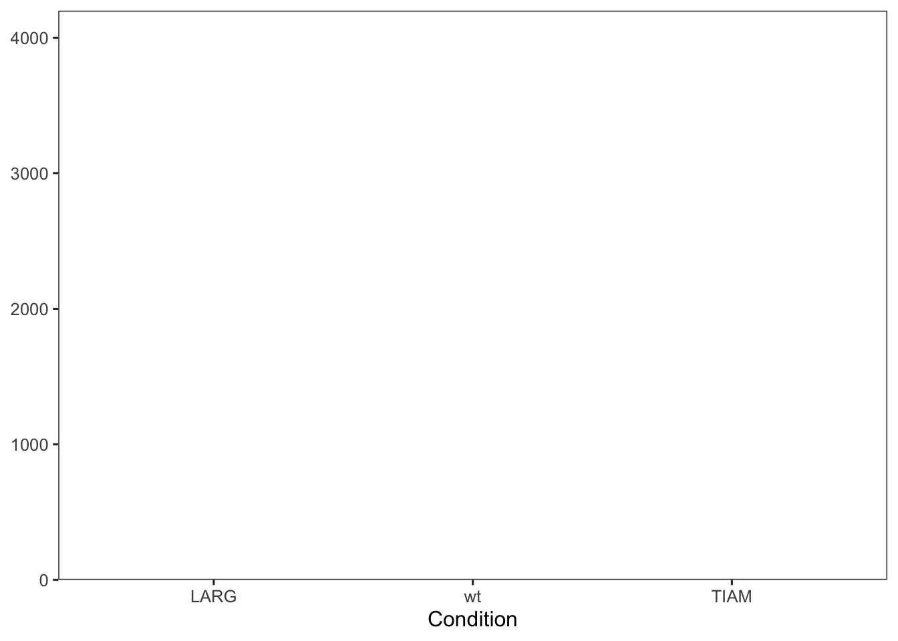
We add the 95% confidence interval from the summary of the biological replicates as a line:
And we add the mean value of each replicate as a dot. Here, the size of the dot is reflecting n:
The function scale_size_area() ensures that 0 is represented as an area of 0 and allows to to define that an n of 10,50 and 90 is shown in the legend:
This is what that looks like:

Next, one of my favorite tweaks for discrete conditions is to rotate the plot 90 degrees. At the same time, the limits are defined.
p <- p + coord_flip(ylim = c(0.02,0.09)) +
# This ensures correct order of conditions when plot is rotated 90 degrees
scale_x_discrete(limits = rev)Rotation improves readability of the labels for the conditions, even when they are long. It also easier to read the different calcium levels:
To guide the interpretation, a line is added as a threshold of 0.06 µM (=60 nM):
Adjusting the axis labels and adding a title and caption:
p <-
p + labs(
title = "Calcium concentrations are less than 60 nM",
subtitle = "at different stages of transendothelial migration",
x = "Stage",
y = "Calcium [µM]",
caption = "@joachimgoedhart\n(based on data from van der Linden, DOI: 10.1101/2021.06.21.449214)",
tag = "Protocol 2"
)The layout it further optimized. The most tricky part is positioning of the label for the different conditions. It is placed right above the conditions, which I really like. However, getting this right involves a bit of trial and error and I recommend playing with the parameters to see how it affects the positioning. Something similar applies to the legend which is moved into the lower right corner of the plot, although this is eassier to accomplish. The comments explain the effect of the different lines:
p <-
#Set text size
p + theme_classic(base_size = 16) + theme(
plot.caption = element_text(
color = "grey80",
hjust = 1
),
#Set position of legend to lower right corner
legend.position = c(0.88,0.15),
#This line positions the label ('title') of the conditions
axis.title.y = element_text(vjust = 0.98, angle = 0, margin=margin(l=70)),
#This line positions the names of the conditions
#A negative margin is needed for aligning the y-axis 'title' with the 'text'
axis.text.y = element_text(vjust = 0.5, hjust=1, angle = 0, margin=margin(l=-90, r=5)),
#Move 'tag', so its position partially overlaps with the conditions
plot.tag.position = c(0.06,0.99)
) + guides(fill = "none",
size = guide_legend(title = 'n per replicate', label.position = "left")
)To save the plot as a PNG file:
png(file=paste0("Protocol_02.png"), width = 4000, height = 3000, units = "px", res = 400)
p
dev.off()quartz_off_screen
2 4.3 Protocol 3 - small multiples of time courses
This protocol displays a number of different timecourses as ‘small multiples’. Small multiples, as the name suggests, displays many small plot separately as a stamp collection. By stressing the data, rather than the labels and grids, this can be a powerful visualization strategy.
The data is taken from a publication by Arts et al. (2021) and we recreate figure panel 1F. The original figure is in small multiple format, but we tweak it a bit more to increase the focus on the data.
Let’s first load the necessary package:
The data comes from an excel file:
# A tibble: 6 × 13
time `neutro 1` `neutro 2` `neutro 3` `neutro 4` `neutro 5` `neutro 6`
<dbl> <dbl> <dbl> <dbl> <dbl> <dbl> <dbl>
1 0 0.53 0.54 0.55 0.59 0.58 0.34
2 10 0.44 0.6 0.5 0.4 0.54 0.4
3 20 0.33 0.55 0.64 0.3 0.48 0.41
4 30 0.35 0.54 0.69 0.28 0.52 0.32
5 40 0.41 0.53 0.57 0.23 0.44 0.29
6 50 0.32 0.4 0.4 0.26 0.43 0.25
# ℹ 6 more variables: `neutro 7` <dbl>, `neutro 8` <dbl>, `neutro 9` <dbl>,
# `neutro 10` <dbl>, `neutro 11` <dbl>, `neutro 12` <dbl>It is in a wide format, so we need to make it tidy. The parameter that was measured over time is the ‘roundness’ of cells:
The data is in the right shape now, so let’s save it:
First we create a line plot of all the data:
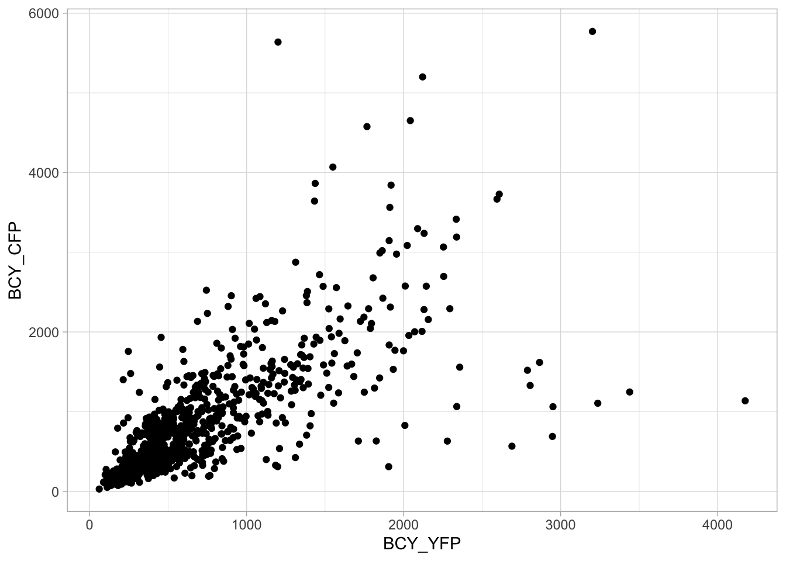
With the facet_wrap() function, we turn this into a small multiple:

Set the limits of the axis and force the y-axis to start at 0
p <-
p + scale_y_continuous(expand = c(0, 0), limits = c(0, 1.0)) +
scale_x_continuous(expand = c(0,0), limits = c(0, 300))Use a minimal theme and remove the strips and grid to increase focus on the data:
p <- p + theme_minimal(base_size = 14)
p <- p + theme(strip.background = element_blank(),
strip.text = element_blank(),
plot.caption = element_text(color = "grey80"),
#Remove grid
panel.grid.major = element_blank(),
panel.grid.minor = element_blank()
)
p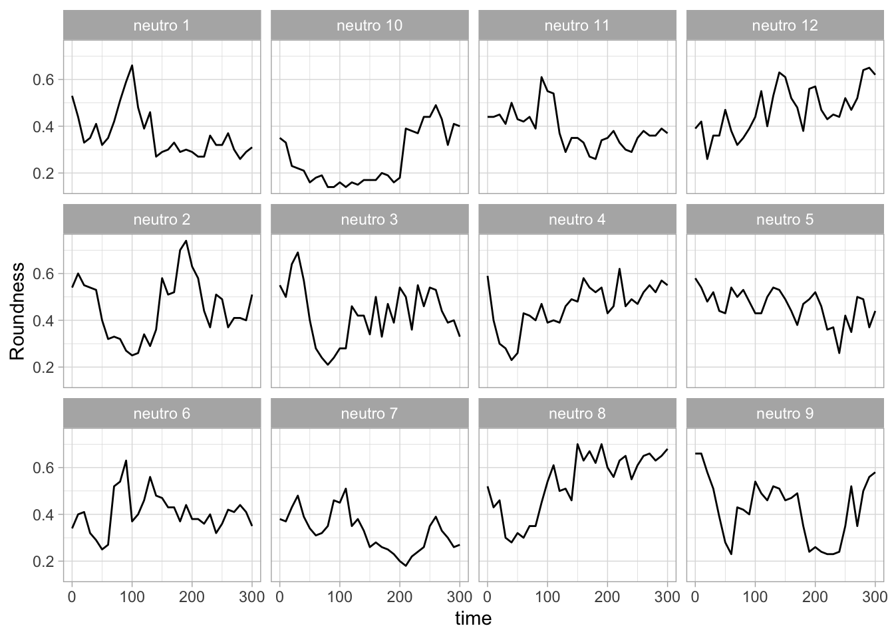
I do not like the repeated axis for the different plots. We can remove those:

This is a very minimal plot, focusing entirely on the data. It may work well, but it is informative to add some information about the scaling of the x- and y-axis. To achieve this, I add lines to the lower left plot, which correspond to the data of ‘neutro 6’ (you can see this in the small multiple plot where each plot was labeled). I define a new dataframe with the x- and y-scale for ‘neutro 6’ to do just that:
ann_line<-data.frame(xmin=0,xmax=300,ymin=0,ymax=1,
Cell=factor("neutro 6",levels=c("neutro 6")))
ann_line xmin xmax ymin ymax Cell
1 0 300 0 1 neutro 6This dataframe can now be used to draw two lines with geom_segment():
p <- p +
#Vertical line
geom_segment(data=ann_line, aes(x=xmin,xend=xmin,y=ymin,yend=ymax), size=2, color='grey40') +
#Horizontal line
geom_segment(data=ann_line, aes(x=xmin,xend=xmax,y=ymin,yend=ymin), size=2, color='grey40') +
NULL
p
The plot is now in black and white which gives it a strong contrast. We can make it a bit more soft and pleasant to look at by changing to shades of grey. Also, the labels of the axes are moved next to the lines:
p <- p +
theme(panel.background = element_rect(fill='grey98', color=NA),
panel.border = element_rect(color='grey90', fill=NA),
axis.title.x = element_text(size=14, hjust = 0, color='grey40'),
axis.title.y = element_text(size=14, vjust = 0, hjust=0, angle = 90, color='grey40'),
) Finally, we add a title, caption, and labels (and a scale in brackets):
p <-
p + labs(
title = "Changes in the shape of migrating cells over time",
x = "Time [300s]",
y = "Circularity [0-1]",
caption = "@joachimgoedhart\n(based on data from Arts et al., DOI: 10.3389/fimmu.2021.667213)",
tag = "Protocol 3"
) png(file=paste0("Protocol_03.png"), width = 4000, height = 3000, units = "px", res = 400)
p
dev.off()quartz_off_screen
2 4.4 Protocol 4 - Plotting data from a 96-wells experiment
This protocol showcases some serious data wrangling and tidying. One reason is that the data is acquired with a 96-wells plate reader and the data is stored according to the layout of the plate. This makes total sense from a human perspective, but it is not well suited for data visualization.
In addition, the plate is measured twice. One measurement is the luminescence from a luciferase and the other measurement is the luminescence from Renilla. The latter reading serves as a reference and therefore, the luciferase data is divided by the Renilla intensities. A final step before the data is visualized is a normalization to a control condition.
The code that is shown here is also the basis for the plotXpress app that can be used to process and visualize the data. In fact, the data visualization is very close to the standard output of plotXpress and uses the same example data.
We start by loading a package that we need:
The measured data is read from an excel sheet. Note that this is the raw data that is stored by the software that operates the plate reader:
New names:
• `` -> `...1`
• `` -> `...2`
• `` -> `...3`
• `` -> `...5`
• `` -> `...6`
• `` -> `...7`
• `` -> `...8`
• `` -> `...9`
• `` -> `...10`
• `` -> `...11`
• `` -> `...12`
• `` -> `...13`
• `` -> `...14`
• `` -> `...15`
• `` -> `...16`
• `` -> `...17`The experimental conditions for each well are stored in a separate CSV file, generated by the experimentalist that did the experiment:
Wells condition treatment1 treatment2
1 A01 - HEK -
2 B01 - HEK -
3 C01 - HEK -
4 D01 - HEK -
5 E01 - neuron -
6 F01 - neuron -You can see that the design file is tidy. In contrast the excel file with data is far from tidy. In the excel sheet, two ‘rectangles’ of cells define the data for the firefly & renilla reads. The data is subset and converted to a vector
firefly <- df_raw[19:26,6:17] %>% unlist(use.names = FALSE)
renilla <- df_raw[40:47,6:17] %>% unlist(use.names = FALSE)Define a dataframe with wells
For convenience, all numbers should consist of 2 digits and so we add a zero that precedes the single digit numbers:
To generate a unique index for each row in the dataframe, we define ‘Wells’, which combines the row and column index:
Next, we create a dataframe that holds the data of individual columns, rows and wells:
column row Wells
1 1 A A01
2 1 B B01
3 1 C C01
4 1 D D01
5 1 E E01
6 1 F F01Add to df_plate the vectors with data from firefly and renilla reads
Merge the design with the data, based on the well ID - left_join() is used to add only data for wells that are listed in the design dataframe
Wells condition treatment1 treatment2 column row firefly renilla
1 A01 - HEK - 1 A 2010 2391540
2 B01 - HEK - 1 B 3210 2391639
3 C01 - HEK - 1 C 1965 2390991
4 D01 - HEK - 1 D 2381 2391774
5 E01 - neuron - 1 E 1292 269021
6 F01 - neuron - 1 F 991 268918Calculate the relative expression from the firefly/renilla ratio
Take all control conditions and calculate the average value
df_norm <- df_4 %>% filter(condition == "-") %>%
group_by(treatment1,treatment2) %>%
summarise(mean=mean(expression)) `summarise()` has grouped output by 'treatment1'. You can override using the
`.groups` argument.Combine the mean values (needed for normalization) values with the df_4 dataframe
Calculate the Fold Change by normalizing all measurements against the control (-)
The result is a dataframe that holds all the necessary data:
Wells condition treatment1 treatment2 column row firefly renilla expression
1 A01 - HEK - 1 A 2010 2391540 0.0008404626
2 B01 - HEK - 1 B 3210 2391639 0.0013421758
3 C01 - HEK - 1 C 1965 2390991 0.0008218350
4 D01 - HEK - 1 D 2381 2391774 0.0009954954
5 E01 - neuron - 1 E 1292 269021 0.0048025991
6 F01 - neuron - 1 F 991 268918 0.0036851382
mean Fold Change
1 0.0009999922 0.8404692
2 0.0009999922 1.3421863
3 0.0009999922 0.8218414
4 0.0009999922 0.9955032
5 0.0040858977 1.1754085
6 0.0040858977 0.9019164The data is in the right shape now, so let’s save it:
Based on the dataframe, we can create a plot with jittered dots that show the data:
To splot the graphs based on treatment1 (vertical) and treatment2 (horizontal) we use the facet_grid() function:
We add a horizontal line for mean value:
Add labels:
p <-
p + labs(
title = "Effect of DNA sequences on reporter levels under different conditions",
subtitle = "The expression level was determined by a dual luciferase assay\n and the values were normalized to a control with no DNA sequence (-)",
x = "DNA Sequence",
y = "Fold change of the reporter relative to the control (-)",
caption = "@joachimgoedhart\n(based on data from Brandorff et al., DOI: 10.1101/2021.07.08.451595)",
tag = "Protocol 4"
) Set the theme and font size:
Format the facet labels (strips) and the caption + subtitle
p <- p + theme(strip.background = element_rect(fill="grey90", color="grey50"),
strip.text = element_text(color="grey50"),
plot.caption = element_text(color = "grey80"),
plot.subtitle = element_text(color = "grey50", face = "italic"),
#Remove the grid
panel.grid.major = element_blank(),
panel.grid.minor = element_blank()
)Let’s look at the result:
To save the plot as a png file:
png(file=paste0("Protocol_04.png"), width = 4000, height = 3000, units = "px", res = 400)
p
dev.off()quartz_off_screen
2 4.5 Protocol 5 - A map of amino acids
This data visualization plots the position of amino acids in a given protein. It is inspired by figure 2A of the paper by Basu et al. (2020)
Let’s load the tidyverse package:
First, we define a vector with the 20 amino acids and the order in which we plot them. The amino acids are grouped as hydrophobic (G,A,V,C,P,I,L,M,F,W), hydrophilic (S,T,Y,N,Q), acidic (D,E) and basic (R,H,K).
[1] "G" "A" "V" "C" "P" "I" "L" "M" "F" "W" "S" "T" "Y" "N" "Q" "D" "E" "R" "H"
[20] "K"The protein sequence that we will use is the Homo sapiens Homeobox protein Hox-D13:
protein <- c("MSRAGSWDMDGLRADGGGAGGAPASSSSSSVAAAAASGQCRGFLSAPVFAGTHSGRAAAA
AAAAAAAAAAASGFAYPGTSERTGSSSSSSSSAVVAARPEAPPAKECPAPTPAAAAAAPP
SAPALGYGYHFGNGYYSCRMSHGVGLQQNALKSSPHASLGGFPVEKYMDVSGLASSSVPA
NEVPARAKEVSFYQGYTSPYQHVPGYIDMVSTFGSGEPRHEAYISMEGYQSWTLANGWNS
QVYCTKDQPQGSHFWKSSFPGDVALNQPDMCVYRRGRKKRVPYTKLQLKELENEYAINKF
INKDKRRRISAATNLSERQVTIWFQNRRVKDKKIVSKLKDTVS")The protein sequence may contain end-of-line characters “” after copy pasting and we need to remove these. The gsub() function can be used:
[1] "MSRAGSWDMDGLRADGGGAGGAPASSSSSSVAAAAASGQCRGFLSAPVFAGTHSGRAAAAAAAAAAAAAAASGFAYPGTSERTGSSSSSSSSAVVAARPEAPPAKECPAPTPAAAAAAPPSAPALGYGYHFGNGYYSCRMSHGVGLQQNALKSSPHASLGGFPVEKYMDVSGLASSSVPANEVPARAKEVSFYQGYTSPYQHVPGYIDMVSTFGSGEPRHEAYISMEGYQSWTLANGWNSQVYCTKDQPQGSHFWKSSFPGDVALNQPDMCVYRRGRKKRVPYTKLQLKELENEYAINKFINKDKRRRISAATNLSERQVTIWFQNRRVKDKKIVSKLKDTVS"But we can also use str_replace_all() from the {tidyverse} package:
Next, the protein sequence is split into single characters and we assign this vector to aa:
We generate a dataframe with a column with the amino acids and a column that defines their position:
Now we reorder the data frame to the order of the amino acids that we defined earlier in the vector amino_acid_ordered:
The basic plot shows a black tile for each amino acid. Note that the y-axis order is defined by the vector amino_acid_ordered, but it needs to be reverted to order the amino acids from top to bottom along the y-axis (which is naturally starts at the bottom it corresponds to the origin).
The data is in the right shape now, so let’s save it:
p <- ggplot() + geom_tile(data=df_5, aes(x=position, y=aa)) +
scale_y_discrete(limits = rev(amino_acid_ordered))
p
Set the theme to classic, to get rid off the ‘frame’ around the plot and the grid.
For each of the four classes of amino acids we can define a box with a color that indicates the class. For example, there are three basic residues that will have a rectangle filled with blue in the background. The amino acids are factors, but we need numbers to define the coordinates for the rectangle. In a plot with a factors (here on the y-axis) their position is defined by a (non visible) natural number. Therefore we can define a box with the function annotate() for the first residue with y-coordinates ymin=0.5 and ymax=1.5:
 In this way, we define four colored rectangles that reflect the different amino acids categories; blue=basic, red=acidic, yellow=hydrophilic, grey=hydrophobic:
In this way, we define four colored rectangles that reflect the different amino acids categories; blue=basic, red=acidic, yellow=hydrophilic, grey=hydrophobic:
p <- p + annotate(geom = "rect", xmin = -Inf, ymin = 0.5, xmax = Inf, ymax=3.5, fill='blue', alpha=0.15)
p <- p + annotate(geom = "rect", xmin = -Inf, ymin = 3.5, xmax = Inf, ymax=5.5, fill='red', alpha=0.15)
p <- p + annotate(geom = "rect", xmin = -Inf, ymin = 5.5, xmax = Inf, ymax=10.5, fill='yellow', alpha=0.15)
p <- p + annotate(geom = "rect", xmin = -Inf, ymin = 10.5, xmax = Inf, ymax=20.5, fill='black', alpha=0.15)Let’s look at the result:

Adjusting the axis labels and adding a title and caption:
p <-
p + labs(
title = "Mapping the amino acid positions of HOXD13",
subtitle = "shows a high abundance of alanines in the IDR",
y = "Amino acid",
caption = "@joachimgoedhart | based on data from Basu et al, DOI: 10.1016/j.cell.2020.04.018",
tag = "Protocol 5"
)And a final tweak of the label style and location:
In the original paper, a region of the protein is annotated as an ‘intrinsically disordered region’ abbreviated as IDR. Here, we we use the annotate() function to add a rectangle and a label to the top of the plot:
p <- p + annotate("rect", xmin=0, xmax=118, ymin=21, ymax=22, fill='darkblue') +
annotate("text", x=59, y=23, alpha=1, color='darkblue', size=4,label='IDR')
pTo avoid clipping of the new label by the subtitle of the plot:
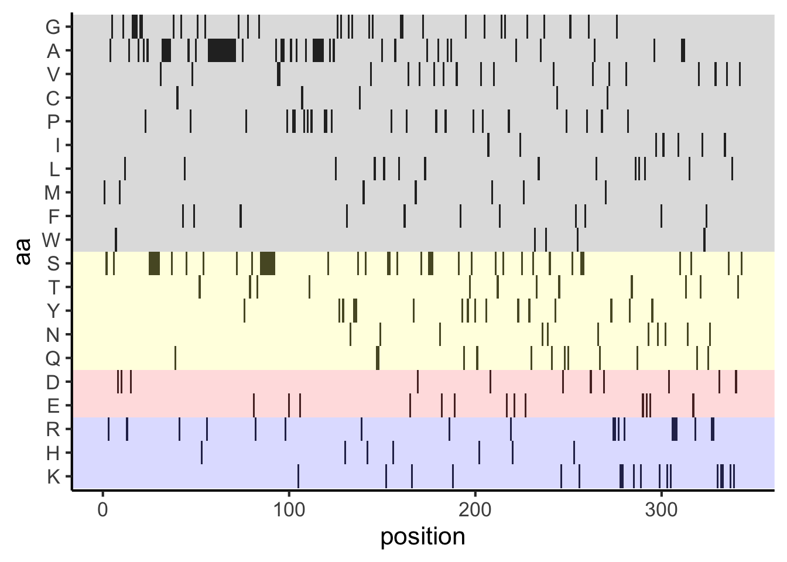
The subtitle is quite close to the IDR label. Let’s give the subtitle a bit more room, by adding a margin at the bottom of the subtitle. This can be done with the theme() function to style the subtitle:

Finally we can save the plot:
png(file=paste0("Protocol_05.png"), width = 4000, height = 3000, units = "px", res = 400)
p
dev.off()quartz_off_screen
2 4.6 Protocol 6 - Heatmap style visualization of timelapse data
Lineplots are typically used to plot data from timeseries (also known as longitudinal data). However, in case of many samples/objects, this may result in a cluttered data visualization. To solve this, the same data can be presented as a heatmap, where every row is an object and the response is coded as a color. A downside is that it is less quantitative as it is difficult to ‘read’ the numbers from this kind of visualization. Still, it is a powerful visualization to plot a lot of data and show its dynamics and heterogeneity. The data and visualization is originally published by Chavez-Abiega et al. (2021)
The multipurpose {tidyverse} package is used for data wrangling and plotting:
A CSV file with the data is loaded. Since the file is a couple of Megabytes, we use the faster fread() function from the package data.table:
Attaching package: 'data.table'The following objects are masked from 'package:lubridate':
hour, isoweek, mday, minute, month, quarter, second, wday, week,
yday, yearThe following objects are masked from 'package:dplyr':
between, first, lastThe following object is masked from 'package:purrr':
transpose Time_in_min Ligand Unique_Object CN_ERK Slide
<num> <char> <int> <num> <char>
1: 2.5 S1P 100 0.3941 P1
2: 3.0 S1P 100 0.3921 P1
3: 3.5 S1P 100 0.3900 P1
4: 4.0 S1P 100 0.3880 P1
5: 4.5 S1P 100 0.3859 P1
6: 5.0 S1P 100 0.3839 P1The column ‘CN_ERK’ has the data on the activity that we will plot over time. Each number in the ‘Unique_Object’ column reflects an individual cell measurement and so we can use that to group the measurements using group_by(Unique_Object). We subtract the average baseline activity from each trace by subtracting the data acquired at the first 5 timepoints: CN_ERK[1:5]. The data is stored in a new column with normalized ERK activity data ‘ERKn’:
df_sub <- df_S1P %>% group_by(Unique_Object) %>% arrange(Time_in_min) %>% mutate(ERKn=CN_ERK-mean(CN_ERK[1:5])) %>% ungroup()Around Timepoint 23 (minutes), the ligand was added. To set this time point to zero, we subtract a value of 23 (minutes) from each point:
The column ‘Unique_Object’ that identifies the individual cells contains natural numbers, but these need to be treated as qualitative data. Therefore, we change the data type in this column to a factor with as.factor():
To order objects, we need to order ‘Unique_Object’ according to something. That something can be the maximum value of the Erk activity:
Plot the data in heatmap style. We use theme_void here to focus only on the data and we will deal with styling of the axes and labels later:
ggplot(df_sub, aes(x=Time_in_min, y=Unique_Object,fill=ERKn)) +
geom_tile() + theme_void()+
scale_fill_viridis_c() 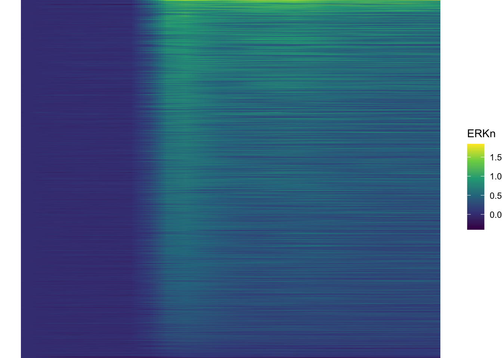
Can we also sort the data based on something else? Definitely, but it requires a bit of understanding of functions. Previously, we used the maximum value. This is defined by the function max, which takes the maxium value from a vector of numbers. Let’s look at an artificial example:
[1] 9Other functions that take a vector as input and return a single value as output can be used. Other existing examples are mean(), sum() and min(). We can also define a function:
[1] 3[1] 7We can use the new function to sort the dataframe:
df_sub <- df_sub %>% mutate(Unique_Object = fct_reorder(Unique_Object, ERKn, one_but_last))
ggplot(df_sub, aes(x=Time_in_min, y=Unique_Object,fill=ERKn)) +
geom_tile() + theme_void()+
scale_fill_viridis_c() 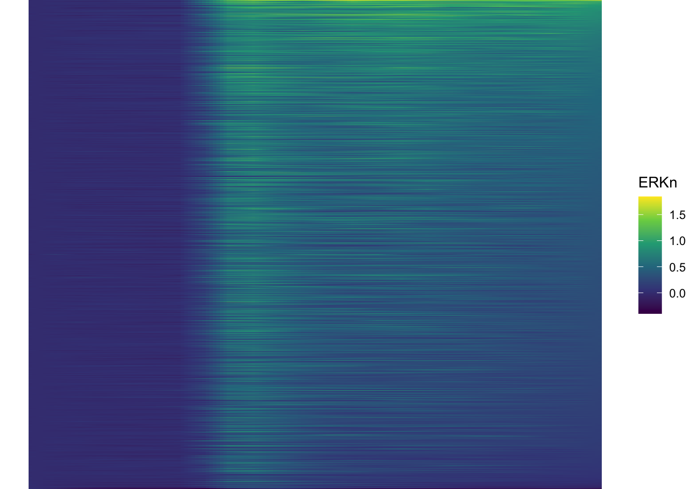
If we want to sort on the sum of the top five values we can define a function:
But we can also directly implement the function in the fct_reorder() function:
df_6 <- df_sub %>% mutate(Unique_Object = fct_reorder(Unique_Object, ERKn, function(x) {sum(tail(sort(x),5))}))Let’s save this data:
p <- ggplot(df_6, aes(x=Time_in_min, y=Unique_Object,fill=ERKn)) + geom_tile() +
# scale_x_continuous(breaks=seq(0,60, by=15), labels=seq(0,60, by=15), limits=c(-8,60)) +
scale_fill_viridis_c(na.value="black", limits = range(-0.1,1.5))Let’s look at the plot

Add labels:
p <-
p + labs(
title = "ERK activity is increased by S1P",
subtitle = "and varies strongly between cells",
x = "Time after addition of S1P (min)",
y = "Cells sorted according to response",
caption = "@joachimgoedhart | data from Chavez-Abiega, DOI: 10.1101/2021.07.27.453948",
tag = "Protocol 6",
fill= "ERK C/N ratio"
)The theme_void() would be close to what we want as a theme, but I prefer to start from theme_light and remove the redundant features (grids and y-axis labels):
p <- p + theme_light(base_size = 14) +
theme(plot.caption = element_text(color = "grey80", hjust = 2.0),
plot.title = element_text(hjust = 0.1, margin = margin(t=10)),
plot.subtitle = element_text(hjust = 0.1, margin = margin(t=2, b=5)),
# Remove background
panel.background = element_blank(),
# Remove borders
panel.border = element_blank(),
# Remove grid
panel.grid.major = element_blank(),
panel.grid.minor = element_blank(),
# Remove text of the y-axis
axis.text.y = element_blank(),
# Remove ticks on y-axis
axis.ticks.y = element_blank(),
# Remove label of y-axis
axis.title.y = element_blank(),
# Make x-axis ticks more pronounced
axis.ticks = element_line(colour = "black")
)
pThe caption does not look good in this plot, but it has been optimized to look good in the saved PNG. To get a proper aligned caption in the Rmd you may need to optimize the hjust value in theme((plot.caption = element_text()))
To save the plot as PNG:
png(file=paste0("Protocol_06.png"), width = 4000, height = 3000, units = "px", res = 400)
p
dev.off()quartz_off_screen
2 4.7 Protocol 7 - Ridgeline plot
In protocol 6 we have seen how time traces can be visualized with a heatmap style data visualization.
The advantage is that huge amounts of data can be simultaneously visualized. However, it is difficult to relate the color to numbers.
As such the color coded values in a heatmap give a qualitative view of heterogeneity.
In this protocol, we use a method that allows more data than an ordinary lineplot, but keeps the advantage of this plot, i.e. allowing a quantitative comparison.
To do this, an offset between curves is introduced. A package to this directly in ggplot2 is available ({ggridges}) but it may not work well when the values show a negative and positive deviation from baseline values (usually the baseline is zero).
In addition, we have more flexibility (and insight) when we do this ourselves.
Load the {tidyverse} package and the data from a CSV file:
Time Cell.1 Cell.2 Cell.3 Cell.4 Cell.5 Cell.6
1 0.0000000 1.0012160 1.0026460 1.0022090 0.9917870 0.9935569 0.9961453
2 0.1666667 0.9994997 0.9928106 0.9997658 0.9975348 1.0018910 1.0039790
3 0.3333333 0.9908362 0.9964057 0.9905094 0.9946743 0.9961497 0.9953369
4 0.5000000 0.9991967 0.9972504 0.9972806 1.0074250 1.0060510 1.0062390
5 0.6666667 1.0093450 1.0109910 1.0103590 1.0084080 1.0022130 0.9982496
6 0.8333333 0.9941078 0.9940830 0.9990720 1.0181230 1.0110220 1.0139400
Cell.7 Cell.8 Cell.9 Cell.10 Cell.11 Cell.12 Cell.13
1 0.9964277 1.0006770 0.9999106 1.0043270 1.0086590 1.0074670 0.9875549
2 1.0098780 1.0015050 1.0014380 0.9938114 0.9791933 0.9925425 1.0106440
3 0.9917276 1.0000020 0.9997350 1.0049370 1.0250660 1.0079290 1.0062720
4 1.0039710 1.0046840 0.9976190 0.9971925 1.0008340 0.9975954 1.0050230
5 0.9979655 0.9930890 1.0012990 0.9997435 0.9865567 0.9944269 0.9907017
6 1.0087770 0.9916067 1.0025310 0.9919835 0.9930975 1.0012420 1.0025800
Cell.14 Cell.15 Cell.16 Cell.17 Cell.18 Cell.19 Cell.20
1 0.9941667 0.9931722 0.9918481 0.9973316 0.9976466 0.9982940 0.9954924
2 1.0024420 0.9980425 0.9974822 0.9976164 0.9881339 1.0122250 1.0132220
3 1.0096800 1.0074450 1.0073690 0.9980090 0.9980346 0.9923310 0.9891400
4 1.0007800 0.9995486 1.0018860 1.0064760 1.0073410 0.9959588 0.9984370
5 0.9930816 1.0018040 1.0014300 1.0006490 1.0088410 1.0013600 1.0040700
6 1.0117190 1.0082190 1.0092750 1.0018410 0.9976196 1.0008680 1.0013100
Cell.21 Cell.22 Cell.23 Cell.24 Cell.25 Cell.26 Cell.27
1 1.0024980 0.9986917 0.9987728 0.9988987 1.0019450 0.9954534 1.0025060
2 1.0022340 1.0023420 0.9963444 0.9969288 0.9990684 0.9973828 0.9944580
3 1.0003150 1.0014660 0.9985501 0.9983435 0.9944611 0.9987581 0.9935282
4 0.9969226 0.9956030 1.0020300 1.0063250 1.0036700 1.0056470 1.0065540
5 0.9980916 1.0018990 1.0042990 0.9995825 1.0009020 1.0028340 1.0031070
6 0.9993777 1.0041500 0.9984087 1.0016190 1.0007090 1.0022360 1.0007950
Cell.28 Cell.29 Cell.30 Cell.31 Cell.32
1 0.9957569 0.9852318 1.0007450 0.9927866 0.9871355
2 0.9952635 0.9931840 1.0030060 0.9977890 1.0028110
3 0.9976221 1.0010230 0.9998598 1.0029210 0.9985340
4 1.0068090 1.0139990 0.9968880 1.0026060 1.0039670
5 1.0046560 1.0070850 0.9995161 1.0039100 1.0076550
6 1.0073290 1.0128910 1.0000250 1.0025260 0.9998251The data is not tidy, so it needs to be re-arranged:
df_tidy <- pivot_longer(df1, cols = -c(Time), names_to = "Cell", values_to = "Activity")
head(df_tidy)# A tibble: 6 × 3
Time Cell Activity
<dbl> <chr> <dbl>
1 0 Cell.1 1.00
2 0 Cell.2 1.00
3 0 Cell.3 1.00
4 0 Cell.4 0.992
5 0 Cell.5 0.994
6 0 Cell.6 0.996In the next step, we create a new dataframe ‘df_rank’ to order the traces. We group the data by ‘Cell’ and extract the data from a specified time window with filter(). The filtered data is used to integrate the activity by using the function sum(). This summed value is used to generate a rank, ranging from 0 to 1:
df_rank <- df_tidy %>% group_by(Cell) %>% filter(Time>=2 & Time <=10) %>% summarise(amplitude=sum(Activity)) %>% mutate(rank=percent_rank(amplitude))
head(df_rank)# A tibble: 6 × 3
Cell amplitude rank
<chr> <dbl> <dbl>
1 Cell.1 50.3 0.742
2 Cell.10 50.9 0.806
3 Cell.11 49.8 0.645
4 Cell.12 50.3 0.774
5 Cell.13 49.6 0.548
6 Cell.14 49.4 0.484We can add the rank information from ‘df_rank’ to the ‘df_tidy’ dataframe:
This data is saved:
Let’s make a lineplot of this data and use the rank to shift the data plotted on the y-axis:
ggplot(df_7, aes(x=Time, y=Activity+(rank*1), group=Cell, height = rank)) + geom_line(alpha=0.5, size=0.5)
We can use the rank to shift the plot also in the horizontal direction:
p <- ggplot(df_7, aes(x=Time+(rank*10), y=(Activity+(rank*1)), group=Cell)) + geom_line(alpha=0.5, size=0.5)
p
Add labels:
p <-
p + labs(
title = "Activities measured in single cells over time",
subtitle = "Sorting of the cells is based on integrated activity",
x = "Time [min]",
y = "Activity [arbitrary units]",
caption = "@joachimgoedhart | data from Reinhard et al; doi: 10.1091/mbc.E17-03-0136",
tag = "Protocol 7"
)If we would like to use color, this would be a way to do that:

Although it looks flashy, we do not really need color here. So we stick to black and white and make some adjustments to the layout by tweaking the theme settings. To remove the grid and show the axis:
p <- p + theme_classic(base_size = 16)
p <- p + theme(panel.grid.major = element_blank(),
plot.caption = element_text(color = "grey80"),
panel.grid.minor = element_blank(),
NULL)
pTo give it more of a 3D feel we can add a third axis by defining a line:
The next step is to remove the original x-axis, which is a bit too long and also replace that with a line that runs until 20 (minutes):
p <- p + theme(axis.line.x = element_blank(),
axis.title.x = element_text(hjust = 0.3)
) +
annotate(geom = "segment", x=0,y=1,xend=20,yend=1, size=1)
p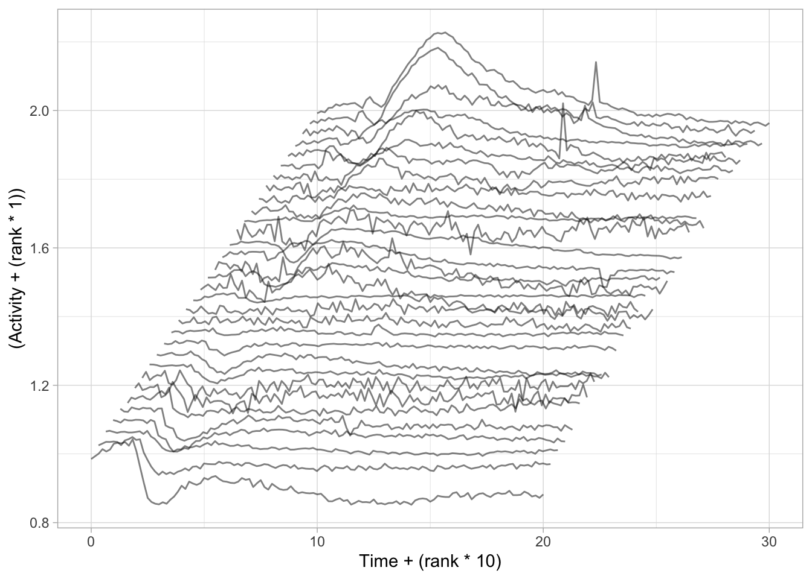
Finally, we can use scale_x_continuous() to improve two aspects of the x-axis. First, the labels run up to 30, but we can set the scale to 0-20 with breaks = c(0,20). Second, the default in ggplot is add a bit of margin to the plot, that’s why the x-axis does not touch the y-axis. This can be solved by using expand = c(0, 0):
We can manually add two
To save the plot as PNG:
png(file=paste0("Protocol_07.png"), width = 4000, height = 3000, units = "px", res = 400)
p
dev.off()quartz_off_screen
2 4.8 Protocol 8 - Plotting data in a 96-wells layout
This protocol displays data from a 96-wells plate in the same format as the plate. This data visualization of 96-well plate data is also used in the plotXpress app.
We start by loading a package that we need:
A good example of data wrangling related to 96-wells data is given in protocol 4. Here we start from the tidy data that was the result of data tiyding in the section Data in 96-wells format:
X column row Well Intensity
1 1 1 A A1 2010
2 2 1 B B1 3210
3 3 1 C C1 1965
4 4 1 D D1 2381
5 5 1 E E1 1292
6 6 1 F F1 991We can construct a basic plot where each well is represented by a large dot and the color used to fill the dot represents the intensity. This is much like a heatmap, but it uses a dot instead of a tile:
 There is a couple of things that need to be fixed. First, we invert the row names, to put the row ‘A’ at the top. In addition, the column names are depicted as factors (this can also be achieved by mutating the dataframe):
There is a couple of things that need to be fixed. First, we invert the row names, to put the row ‘A’ at the top. In addition, the column names are depicted as factors (this can also be achieved by mutating the dataframe):
p <- ggplot(data=df_8, aes(x=as.factor(column), y=fct_rev(row))) +
geom_point(aes(color=Intensity), size=10)
p
Let’s change the color palette that displays intensity to viridis. The numbers in the legend are high and that is why they are difficult to read quickly. So we use the scales package to use the scientific notation:

In my opinion, the scientific notation does not work well, so let’s try to use commas as a thousands separator:
Scale for x is already present.
Adding another scale for x, which will replace the existing scale.
Scale for colour is already present.
Adding another scale for colour, which will replace the existing scale.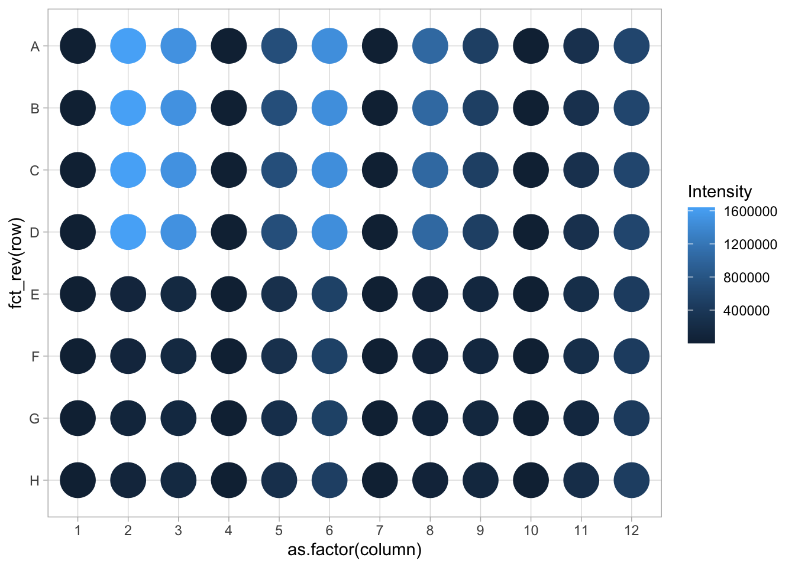
This is a bit better, but the numbers need to be right aligned:
 This looks better, now add the labels (and we skip the labels for the x- and y-axis):
This looks better, now add the labels (and we skip the labels for the x- and y-axis):
p <-
p + labs(
title = "Readings from a 96-wells plate",
subtitle = NULL,
x = NULL,
y = NULL,
caption = "\n@joachimgoedhart\nbased on data from Brandorff et al., DOI: 10.1101/2021.07.08.451595",
color= 'Intensity [a.u.]',
tag = "Protocol 8"
)
pSet the theme and font size:
Note that this overrides any previously defined modifications of the theme() function, such as the alignment of the legend labels. So we need to define this again.
We also adjust the theme settings for the other elements:
p <- p + theme(plot.caption = element_text(color = "grey80"),
plot.subtitle = element_text(color = "grey50", face = "italic"),
#Remove the grid
panel.grid.major = element_blank(),
panel.grid.minor = element_blank()
)Let’s look at the result:
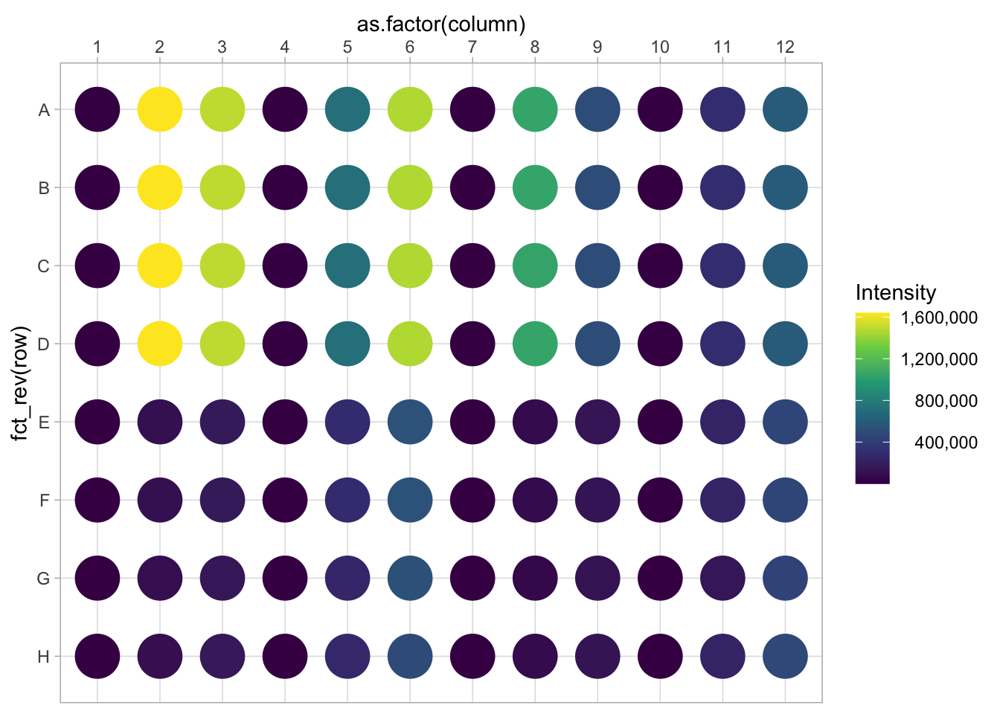
To save the plot as a png file:
png(file=paste0("Protocol_08.png"), width = 3000, height = 2000, units = "px", res = 400)
p + coord_fixed()
dev.off()quartz_off_screen
2 4.9 Protocol 9 - A dose response curve with fit
In this protocol we visualize the data that was used to make a ‘dose reponse curve’. The data consists of some response that is measured at different concentrations of a compound that induces the effect (agonist). This is a typical experiment in pharmacology to understand the relation between the dose and the response. One of the relevant parameters is the ‘Half maximal effective concentration’ abbreviated as EC50. This is the concentration at which 50% of the maximal response is measured and we obtain this value by curve fitting. In this protocol we use data acquired from single cells from different biological replicates. We generate a ‘superplot’ (Lord et al., 2021) to distuinguish technical and sample replicates. More details about the experimental approach are published by Chavez-Abiega et al. (2022).
We start by loading the {tidyverse} package:
Read the data:
X Unique_Unique_Object Experiment Aktnac ERKnac Condition Concen
1 1 12 20200122 P1 0.0558 -0.2106 PTx 0
2 2 15 20200122 P1 0.2458 -0.1424 PTx 0
3 3 16 20200122 P1 0.0412 -0.2493 PTx 0
4 4 22 20200122 P1 -0.1194 -0.1980 PTx 0
5 5 23 20200122 P1 0.1838 -0.1540 PTx 0
6 6 25 20200122 P1 0.3291 -0.7078 PTx 0The concentration is listed in the column ‘Concen’, the measured response is in the column ‘ERKnac’ and the column ‘Experiment’ identifies the replicates. Let’s rename the columns for easier identification of what they represent:
X Unique_Unique_Object Experiment Aktnac Response Condition Concentration
1 1 12 20200122 P1 0.0558 -0.2106 PTx 0
2 2 15 20200122 P1 0.2458 -0.1424 PTx 0
3 3 16 20200122 P1 0.0412 -0.2493 PTx 0
4 4 22 20200122 P1 -0.1194 -0.1980 PTx 0
5 5 23 20200122 P1 0.1838 -0.1540 PTx 0
6 6 25 20200122 P1 0.3291 -0.7078 PTx 0To change the column ‘Experiment’ from text into a number that represents the replicate, we can convert it using as.numeric(). Since we need these numbers as qualitative data (a label), we convert the numbers to a factor with as.factor():
X Unique_Unique_Object Experiment Aktnac Response Condition Concentration
1 1 12 20200122 P1 0.0558 -0.2106 PTx 0
2 2 15 20200122 P1 0.2458 -0.1424 PTx 0
3 3 16 20200122 P1 0.0412 -0.2493 PTx 0
4 4 22 20200122 P1 -0.1194 -0.1980 PTx 0
5 5 23 20200122 P1 0.1838 -0.1540 PTx 0
6 6 25 20200122 P1 0.3291 -0.7078 PTx 0
Replicate
1 1
2 1
3 1
4 1
5 1
6 1The range of concentrations at which the compound is examined spans a few orders of magnitude and therefore a log scale is used to display the concentrations. The minimal response is usually measured at a concentration of 0, but the logarithm of 0 is undefined. Therefore, plotting 0 on a logscale will give an error. The logarithm of 0 can be approached by minus infinity. Therefore, we convert the concentration of 0 to a low value, in this case 0.01:
df_DRC <- df_DRC %>%
mutate(Concentration = ifelse((Concentration == 0),
yes = 0.01,
no = Concentration)
)Next we take the ‘Response’ and calculate the average per concentration and for each biological replicate and store that information in a new dataframe:
df_summary <- df_DRC %>% group_by(Concentration, Replicate) %>% summarise(mean_Response=mean(Response))`summarise()` has grouped output by 'Concentration'. You can override using the
`.groups` argument.We can define a plot that shows the data with geom_jitter() and the average with a large dot with geom_point(). Each replicate has its own color and the data is plotted on a log scale with scale_x_log10():
p <- ggplot(data = df_DRC, aes(x = Concentration, y = Response)) +
geom_jitter(aes(x = Concentration, y = Response, color=Replicate), width=0.2, size=2, shape=16, alpha=0.2) +
geom_point(data=df_summary, aes(x = Concentration, y = mean_Response, fill=Replicate), size=8, shape=21, alpha=0.8) +
scale_x_log10()
p
Adjusting the theme and the y-axis scale improves the plot:

Add labels:
p <- p + labs(
title = "Responses of individual cells to Histamine",
x = "Histamine concentration [µM]",
y = "Response [arbitrary units]",
caption = "@joachimgoedhart\nbased on data from Chavez-Abiega et al., DOI: 10.1242/jcs.259685",
tag = "Protocol 9"
) +
theme(plot.caption = element_text(color = "grey80"))And to label the different replicates with a colorblind friendly palette, we define a set of colors that were proposed by Paul Tol: https://personal.sron.nl/~pault/
To use these colors we define manual color scales for both ‘fill’ (used for geom_point()) and ‘color’ (used for geom_jitter()):
The result is a dose response curve in which the replicates are clearly identified with colorblind friendly colors. The EC50 can be determined from fitting a curve. To this end, we use the function nls(), which needs an equation, the data and estimates of the values. It will perform a ‘nonlinear least squares’ optimization to find parameters for the equation that best fit with the data of ‘df_summary’. The parameters are ‘bot’, ‘top’, ‘EC50’ and ‘slope’:
fit <- nls(mean_Response ~ top+(bot-top)/(1+(Concentration/EC50)^slope),
data = df_summary,
start=list(bot=-2, top=8, EC50=1, slope=1))The result is stored in the object ‘fit’ and the parameters can be listed:
bot top EC50 slope
-0.1990749 3.2915666 0.4968077 0.7141987 To plot the fitted data, we use augment() function that is part of the {broom} package, which we need to load:
library(broom)
p + geom_line(data = augment(fit), aes(x=Concentration, y=.fitted), color="black", size=1)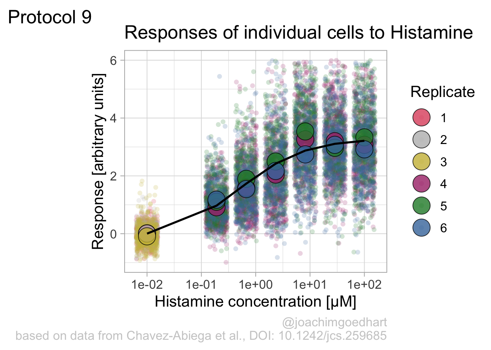
Instead of geom_lin() for plotting the fit, we can also use geom_smooth():
`geom_smooth()` using method = 'loess' and formula = 'y ~ x'
An alternative way to do the curve fit is provided through the {drc} package. To demonstrate this, we load the package and add the curve fit to the data:
Loading required package: MASS
Attaching package: 'MASS'The following object is masked from 'package:dplyr':
select
'drc' has been loaded.Please cite R and 'drc' if used for a publication,for references type 'citation()' and 'citation('drc')'.
Attaching package: 'drc'The following objects are masked from 'package:stats':
gaussian, getInitialp + geom_smooth(data=df_summary, aes(x = Concentration, y = mean_Response), color='blue', method = drm, method.args = list(fct = L.4()), se = FALSE)`geom_smooth()` using method = 'loess' and formula = 'y ~ x'`geom_smooth()` using formula = 'y ~ x'The {drc} package was used to fit the data in the paper by Chavez-Abiega et al. (2022). But the approach followed above with nls() is easier to adapt for data that requires other models for the fit.
Finally, we can save the plot:
`geom_smooth()` using method = 'loess' and formula = 'y ~ x'quartz_off_screen
2 4.10 Protocol 10 - Plotting data that was harvested with a Google form
The goal of this script is to read data that was generated by a Google form, transform it into a tidy format and plot the data. The form contains data that is submitted by students after doing a course on cell biology. The data that is submitted are length measurements on cells and in the end, we will plot these date.
First, we need the {tidyverse} package:
The data from the Google form are stored in a Google sheet that was published on the web as a CSV. This was achieved by ‘File > Share > Publish to web’ and selecting to ‘Publish’ as ‘Comma-separated values’.
After clicking on ‘Publish’ a link is generated that can be read as a csv, and any empty cells are converted to NA. Below is the outcommented code that loads the online google sheet. To make sure that this script works even when the google sheet is no longer active and to ensure a reproducible data visualization, I downloaded a snapshot (made on 21st of April, 2022) of the google sheet as a csv file and I’ll load that insetad:
# df_sheet <- read.csv("https://docs.google.com/spreadsheets/d/e/2PACX-1vSc-nI1-s_u-XkNXEn_u2l6wkBafxJMHQ_Cd3kStrnToh7kawqjQU3y2l_1riLigKRkIqlNOqPrgkdW/pub?output=csv", na.strings = "")
df_sheet <- read.csv("data/20220421_Resultaat-metingen.csv", na.strings = "")
head(df_sheet) Tijdstempel Groep
1 <NA> <NA>
2 <NA> <NA>
3 <NA> <NA>
4 <NA> <NA>
5 <NA> <NA>
6 01/03/2021 15:42:23 B
Resultaten.van.de.10.metingen..in.µm...van.de.celkleuring..methyleenblauw.
1 <NA>
2 <NA>
3 <NA>
4 <NA>
5 <NA>
6 64.6, 52.5, 79.4, 48.4, 66.0, 64.4, 69.8, 71.2, 50.7, 51.0
Resultaten.van.de.10.metingen..in.µm...van.de.kernkleuring..DAPI.
1 <NA>
2 <NA>
3 <NA>
4 <NA>
5 <NA>
6 11.8, 7.8, 7.0, 12.4, 12.7, 14.0, 11.9, 12.9, 11.7, 13.2There are a number of issues with this data. The first 5 rows are empty. I deleted the values in these rows, since they were dummy values from testing the form. Let’s remove rows without data:
The header names are still in the original language (Dutch) and the third and fourth header names with the relevant data are very long. Let’s change the names:
All the length measurements are distributed over two columns, let’s make it tidy and move it to one column:
df_tidy <-
pivot_longer(
df_sheet,
cols = -c("Timestamp", "Group"),
names_to = "Sample",
values_to = "Size"
)
head(df_tidy)# A tibble: 6 × 4
Timestamp Group Sample Size
<chr> <chr> <chr> <chr>
1 01/03/2021 15:42:23 B Cell 64.6, 52.5, 79.4, 48.4, 66.0, 64.4, 69.8, 7…
2 01/03/2021 15:42:23 B Nucleus 11.8, 7.8, 7.0, 12.4, 12.7, 14.0, 11.9, 12.…
3 01/03/2021 23:50:53 A Cell 57.7, 64.9, 44.8, 60.8, 46.8, 70.1, 67.8, 7…
4 01/03/2021 23:50:53 A Nucleus 9.6, 7.1, 8.7, 9.5, 8.1, 6, 8.3, 5.5, 7.8, …
5 02/03/2021 17:09:52 B Cell 14.839,17.578,9.054,16.218,14.724,12.410,14…
6 02/03/2021 17:09:52 B Nucleus 2.792,1.819,2.275,2.426,2.263,2.159,3.056,2…The column with measurements contains up to 10 length measurements. The values are separated by a comma and often a space. First, the space is removed and then each row is split into multiple rows, where each row has a single measurement. The comma is used to separate the values:
The ‘Size’ column values are converted to the class numeric. The advantage is that anything that is not a number will be converted to NA. These non-numeric data can stem from incorrectly enetered data. Examples of these incorrect data are numbers with units or with wrong separators.
Finally, we can filter any values that fall outside the range of expected values (and this will also remove the cells with NA):
# A tibble: 6 × 4
Timestamp Group Sample Size
<chr> <chr> <chr> <dbl>
1 01/03/2021 15:42:23 B Cell 64.6
2 01/03/2021 15:42:23 B Cell 52.5
3 01/03/2021 15:42:23 B Cell 79.4
4 01/03/2021 15:42:23 B Cell 48.4
5 01/03/2021 15:42:23 B Cell 66
6 01/03/2021 15:42:23 B Cell 64.4The dataframe is cleaned and tidy and so it is ready for visualization. The primary information is the distribution of size measurements for the measurements of cells and cell nuclei. This can be achieved by using geom_density(). Given the range of sizes, it makes sense to use a log10 scale for the x-axis:
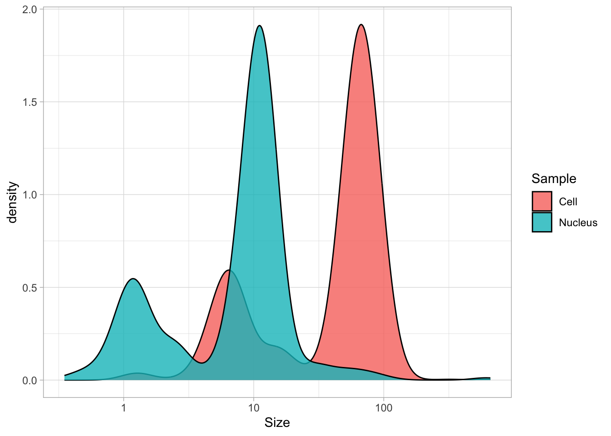
The geom_density() produces a smooth distribution of the data. I actually prefer to see the real data and that’s why we turn to geom_histogram. I also will split the data according to the sample and groups and this can be achieved with facet_grid(). Here, we use the labeller() function to combine the column name ‘Group’ with the the factor it presents, as this makes it easier to understand what is plotted:
ggplot(df_size, aes(x=Size, fill=Sample))+geom_histogram(alpha=.8) +
facet_grid(Sample~Group, labeller = labeller(Group=label_both)) +
scale_x_log10()`stat_bin()` using `bins = 30`. Pick better value with `binwidth`.
The use of color is redundant, since the data is split in Cell and Nucleus anyway, so we remove that. The difference between groups is not large and for the final data visualization I chose to combine the data for all the groups:
p <- ggplot(df_size, aes(x=Size)) +
geom_histogram(alpha=.5, bins=50) +
facet_grid(~Sample) +
annotation_logticks(sides="b", outside = TRUE) +
scale_x_log10()
p
The data is presented in a nice way now, and we can improve the axis labels and add a title and caption:
p <-
p + labs(
title = "Distribution of size measurements",
subtitle = "Sizes of human cells and nuclei of cells",
x = "Size [µm] - log scale",
y = "Count",
caption = "@joachimgoedhart | data submitted by 4 groups of students",
tag = "Protocol 10"
)Optimizing the layout:
p <-
#Set text size
p + theme_light(base_size = 16) +
# Change the color and position of the caption
theme(
plot.caption = element_text(
color = "grey80",
hjust = 1
)
)
p
This looks very decent. But we can edit change the x-axis to display logarithmic space ticks. In addition, I’d like the bars of the histogram to start from the axis and not ‘float’ as in the graph above:
p <- p +
#Force the y-axis to start at zero
scale_y_continuous(expand = c(0, NA), limits = c(0,200)) +
#Apply a logarithmic scale to the x-axis and set the numbers for the scale
scale_x_log10(breaks = c(1,10,100), limits = c(.5,200)) +
#Remove minor gridlines
theme(panel.grid.minor = element_blank()) +
#Add ticks to the bottom, outside
annotation_logticks(sides="b", outside = TRUE) +
#Give a little more space to the log-ticks by adding margin to the top of the x-axis text
theme(axis.text.x = element_text(margin = margin(t=8))) +
#Needed to see the tcks outside the plot panel
coord_cartesian(clip = "off")Scale for x is already present.
Adding another scale for x, which will replace the existing scale.
To save the plot as a PNG file:
png(file=paste0("Protocol_10.png"), width = 3000, height = 2000, units = "px", res = 400)
p
dev.off()quartz_off_screen
2 4.11 Protocol 11 - Plotting time data from a Google form
The goal of this script is to read data that was generated by a Google form and visualize the distribution of the hours at which the form was submitted. We need the tidyverse package:
The data from the Google form are stored in a sheet that was published on the web as a CSV. This was achieved by ‘File > Share > Publish to web’ and selecting to ‘Publish’ as ‘Comma-separated values’.
After clicking on ‘Publish’ a link is generated that can be read as a csv. Any empty cells are converted to NA. As explained in protocol 10, we will load a snapshot of the sheet (the code to read the actual sheet is outcommented here):
# df_sheet <- read.csv("https://docs.google.com/spreadsheets/d/e/2PACX-1vSc-nI1-s_u-XkNXEn_u2l6wkBafxJMHQ_Cd3kStrnToh7kawqjQU3y2l_1riLigKRkIqlNOqPrgkdW/pub?output=csv", na.strings = "")
df_sheet <- read.csv("data/20220421_Resultaat-metingen.csv", na.strings = "")
head(df_sheet) Tijdstempel Groep
1 <NA> <NA>
2 <NA> <NA>
3 <NA> <NA>
4 <NA> <NA>
5 <NA> <NA>
6 01/03/2021 15:42:23 B
Resultaten.van.de.10.metingen..in.µm...van.de.celkleuring..methyleenblauw.
1 <NA>
2 <NA>
3 <NA>
4 <NA>
5 <NA>
6 64.6, 52.5, 79.4, 48.4, 66.0, 64.4, 69.8, 71.2, 50.7, 51.0
Resultaten.van.de.10.metingen..in.µm...van.de.kernkleuring..DAPI.
1 <NA>
2 <NA>
3 <NA>
4 <NA>
5 <NA>
6 11.8, 7.8, 7.0, 12.4, 12.7, 14.0, 11.9, 12.9, 11.7, 13.2Here, we are only interested in the first column with the time data. So we select that column and replace the dutch column name by ‘Timestamp’:
We can seperate the Timestamp column in date and time:
Correct handling of date and time data is quite challenging and a topic on its own. The code to format the ‘Date’ column as date (note that we need a capital Y as the year is presented in 4 digits) would be:
Date Time
6 2021-03-01 15:42:23
7 2021-03-01 23:50:53
8 2021-03-02 17:09:52
9 2021-03-03 09:30:43
10 2021-03-03 16:21:32
11 2021-03-03 21:00:23Here, we avoid the Date format and use the individual numbers. The ‘Date’ column is seperated into three columns for year, month and day. The ‘Time’ column can be split into hour, minute and second:
df_tidy <- df_tidy %>%
separate('Date', c("day", "month", "year"), sep="/", convert = TRUE) %>%
separate('Time', c("hour", "min", "sec"), sep=":", convert = TRUE)
head(df_tidy) day month year hour min sec
6 1 3 2021 15 42 23
7 1 3 2021 23 50 53
8 2 3 2021 17 9 52
9 3 3 2021 9 30 43
10 3 3 2021 16 21 32
11 3 3 2021 21 0 23Note that we use convert = TRUE to ensure that the data is treated as numbers (not as characters). We can use the data to check at what time the data was submitted:
`stat_bin()` using `bins = 30`. Pick better value with `binwidth`.
The default number of ‘bins’ is 30, but it makes more sense to use 24 here as there are 24 hours in a day:
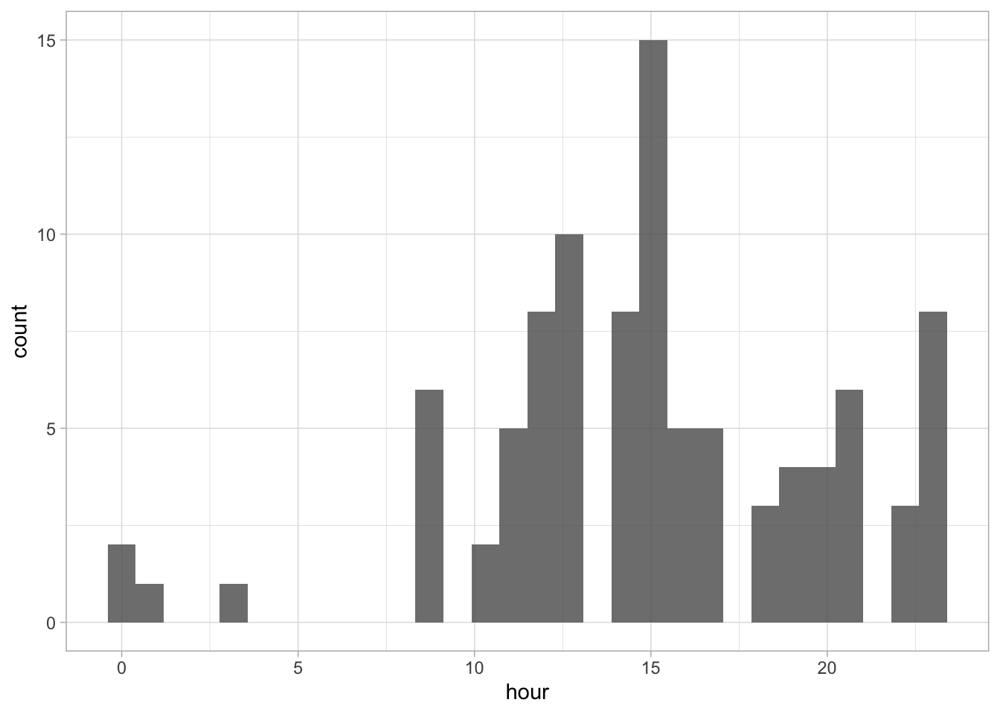
Since ‘hour’ is a number that cycles, with 0 followed by 23, it is nice to connect the data from 23 with 0 and we can do that with coord_polar():
ggplot(df_tidy, aes(x=hour)) +
geom_histogram(bins = 24, alpha=.8) +
coord_polar() +
scale_x_continuous(breaks=seq(0, 24, by=2))
To center the plot at 0, we need to rotate it by -7.5 degrees (1 hour equal 15 degrees). We can use the start option within coord_polar(), but it only accepts ‘radians’. To convert degrees to radians the value is multiplied by pi/180:
ggplot(df_tidy, aes(x=hour)) +
geom_histogram(bins = 24, alpha=.8) +
coord_polar(start = (-7.5*pi/180)) +
scale_x_continuous(breaks=seq(0, 24, by=3))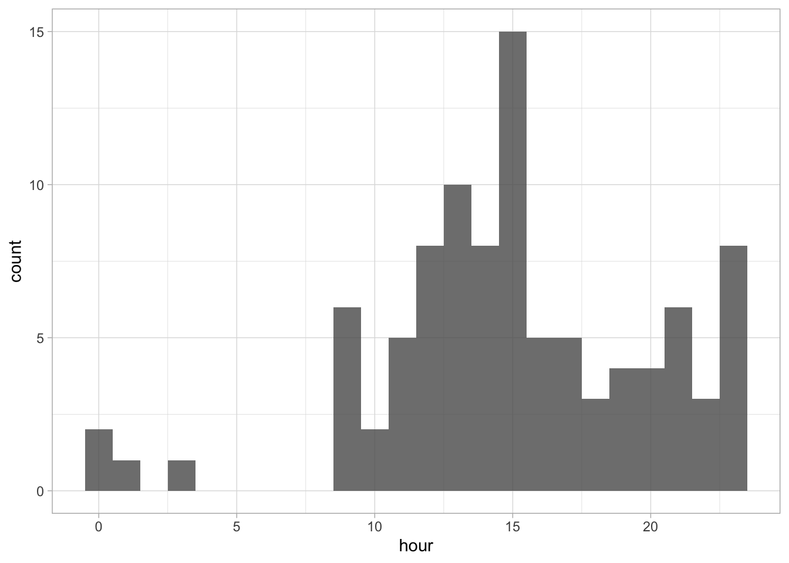 The plot can be rotated to center it around 15h as it reflects the middle of the afternoon, when most activity takes place. To achieve this, we need to shift the start another 15*15 degrees:
p <- ggplot(df_tidy, aes(x=hour)) +
geom_histogram(bins = 24, alpha=.8, color='black') +
coord_polar(start = (-7.5 - 15*15)*pi/180) +
scale_x_continuous(breaks=seq(0, 24, by=3))
p This looks good, let’s first improve on the layout by changing the theme. I do not like the grey background, so any theme with a white background is an improvement, for instance
This looks good, let’s first improve on the layout by changing the theme. I do not like the grey background, so any theme with a white background is an improvement, for instance theme_minimal():

I do not like the labels that show the count. Since it is clear that the length of the bar indicates an amount and since the absolute amount is not so interesting, these labels can be removed. The labels for the hours are helpful and their sice needs to be increased. Finally, I do not like the grid running through the numbers. I did not find a way in the theme setting to get rid of this, so we define the grid ourselves by using repetitive horizontal and vertical lines:
p <- p +
geom_hline(yintercept = c(2,4,6,8), colour = "grey90", size = 0.5) +
geom_vline(xintercept = seq(0, 21, by=3), colour = "grey90", size = 0.5) +
theme_minimal(base_size = 16) +
theme(panel.grid.major.x = element_blank(),
panel.grid.major.y = element_blank(),
panel.grid.minor.x = element_blank(),
panel.grid.minor.y = element_blank(),
axis.text.y = element_blank()
)
p
The grid looks good, but the bars have to be on top of this layer, so we redefine the plot in the correct order:
p <- ggplot(df_tidy, aes(x=hour)) +
geom_hline(yintercept = c(2,4,6,8), colour = "grey90", size = 0.5) +
geom_vline(xintercept = seq(0, 21, by=3), colour = "grey90", size = 0.5) +
geom_histogram(bins = 24, alpha=.8, color='black') +
coord_polar(start = (-7.5 - 15*15)*pi/180) +
scale_x_continuous(breaks=seq(0, 24, by=3)) +
theme_minimal(base_size = 16) +
theme(panel.grid.major.x = element_blank(),
panel.grid.major.y = element_blank(),
panel.grid.minor.x = element_blank(),
panel.grid.minor.y = element_blank(),
axis.text.y = element_blank()
) +
labs(
title = "Counting the hours...",
subtitle = "that a Google form was submitted",
x = "",
y = "",
caption = "@joachimgoedhart | data submitted by students",
tag = "Protocol 11"
) +
theme(plot.caption = element_text(color = "grey80", hjust = 1))
p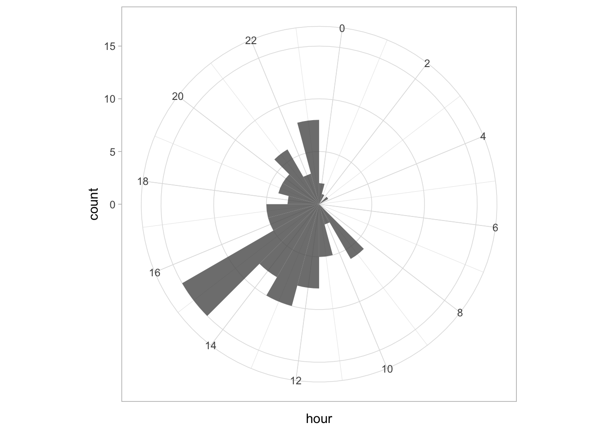
A centered title and subtitle looks nice on this plot:
p <- p + theme(
plot.title = element_text(hjust = 0.5),
plot.subtitle = element_text(hjust = 0.5)
)
p
To save the plot as a PNG file:
png(file=paste0("Protocol_11.png"), width = 4000, height = 3000, units = "px", res = 400)
p
dev.off()quartz_off_screen
2 4.12 Protocol 12 - Plotting grouped data
This protocol explains how data can be plotted side-by-side. It is a remake of a figure that was published by de Man et al. (2021). The source data is published with the paper and can be downloaded. Next to the tidyverse package we need readxl to import the excel file:
Next, we download the xls file from the url, store it as a (temporary) file, and use read_excel() to import the data (note that unlike the read.csv() we cannot directly download the data from a url):
url_xls <- "https://cdn.elifesciences.org/articles/66440/elife-66440-fig5-data1-v2.xlsx"
# file_xls <- basename(url_xls)
download.file(url = url_xls, destfile = 'temp_file')
df_download <- readxl::read_excel('temp_file')New names:
• `` -> `...2`
• `` -> `...3`
• `` -> `...4`
• `` -> `...5`
• `` -> `...6`
• `` -> `...7`
• `` -> `...8`
• `` -> `...9`
• `` -> `...10`
• `` -> `...11`Inspection of the dataframe shows that we can remove the first 11 rows and that the name of the columns is in the 12th row. First we fix the column names:
Then, we can remove the first 12 frames and select only the first 3 columns (I use dplyr:: here to make explicit that the select() function is taken from the {dplyr} package. This may not be necessary when you run your own code):
# A tibble: 6 × 3
Sample `Measurement date` `Total SGFP2-CTNNB1 concentration`
<chr> <chr> <chr>
1 B10 WNT3A c1 cyto 180926 250.188126820392
2 B10 WNT3A c2 cyto 180926 243.40459000116601
3 B10 WNT3A c3 cyto 180926 233.140028430596
4 B10 WNT3A c3 nucleus 180926 377.33830720940603
5 B10 WNT3A c4 cyto 180926 256.42702997341098
6 B10 WNT3A c4 nucleus 180926 379.44318769572499 The third column, containing the measurement data has the class <chr>, but the correct class is numeric. Here, we mutate the column and rename it. To keep the data that is untouched, we add .keep = "unused":
df_tidy <- df_tidy %>% mutate(`SGFP2-CTNNB1` = as.numeric(`Total SGFP2-CTNNB1 concentration`), .keep = "unused")Finally, we need to separate the first column, since it contains the relevant data on the conditions and the grouping of the data:
df_tidy <- df_tidy %>% separate(`Sample`, c("Celltype", "ligand", "number", "compartment"), sep=" ")
head(df_tidy)# A tibble: 6 × 6
Celltype ligand number compartment `Measurement date` `SGFP2-CTNNB1`
<chr> <chr> <chr> <chr> <chr> <dbl>
1 B10 WNT3A c1 cyto 180926 250.
2 B10 WNT3A c2 cyto 180926 243.
3 B10 WNT3A c3 cyto 180926 233.
4 B10 WNT3A c3 nucleus 180926 377.
5 B10 WNT3A c4 cyto 180926 256.
6 B10 WNT3A c4 nucleus 180926 379.There are two compartments (nucleus and cytoplasm) and two ligands (BSA as a control and WNT3A). To avoid abbreviated labels in the plot, we will rename the ‘cyto’ condition:
df_tidy <- df_tidy %>% mutate(compartment =
case_when(compartment == "cyto" ~ "cytoplasm",
TRUE ~ compartment)
)
head(df_tidy)# A tibble: 6 × 6
Celltype ligand number compartment `Measurement date` `SGFP2-CTNNB1`
<chr> <chr> <chr> <chr> <chr> <dbl>
1 B10 WNT3A c1 cytoplasm 180926 250.
2 B10 WNT3A c2 cytoplasm 180926 243.
3 B10 WNT3A c3 cytoplasm 180926 233.
4 B10 WNT3A c3 nucleus 180926 377.
5 B10 WNT3A c4 cytoplasm 180926 256.
6 B10 WNT3A c4 nucleus 180926 379.This data can be plotted in a number of different ways. The first way is by comparing the different compartments for each ligand:
ggplot(df_tidy, aes(x=ligand, y=`SGFP2-CTNNB1`, fill = compartment)) +
geom_boxplot(outlier.color = NA) +
geom_jitter() 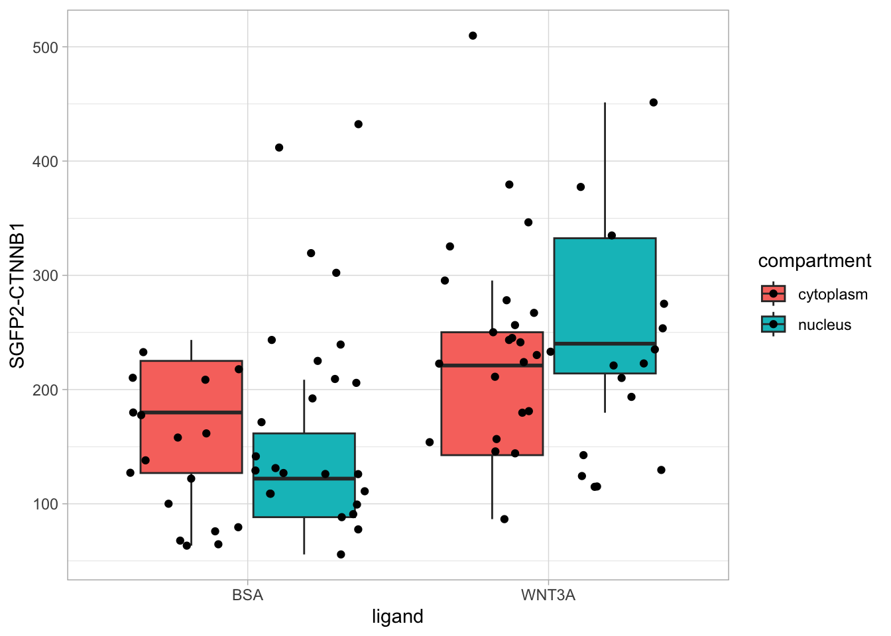
However, in the original figure, the data is split between the two compartments and the two ligands are plotted next to eachother:
ggplot(df_tidy, aes(x=ligand, y=`SGFP2-CTNNB1`, fill = compartment)) +
geom_boxplot(outlier.color = NA) +
geom_jitter() + facet_wrap(~compartment)
This is close to the original figure, but the colors in that figure reflect the ligand, not the compartment:
p <- ggplot(df_tidy, aes(x=ligand, y=`SGFP2-CTNNB1`, fill = ligand)) +
geom_boxplot(outlier.color = NA) +
geom_jitter() + facet_wrap(~compartment)
p
This plot looks good. Now let’s improve the theme.
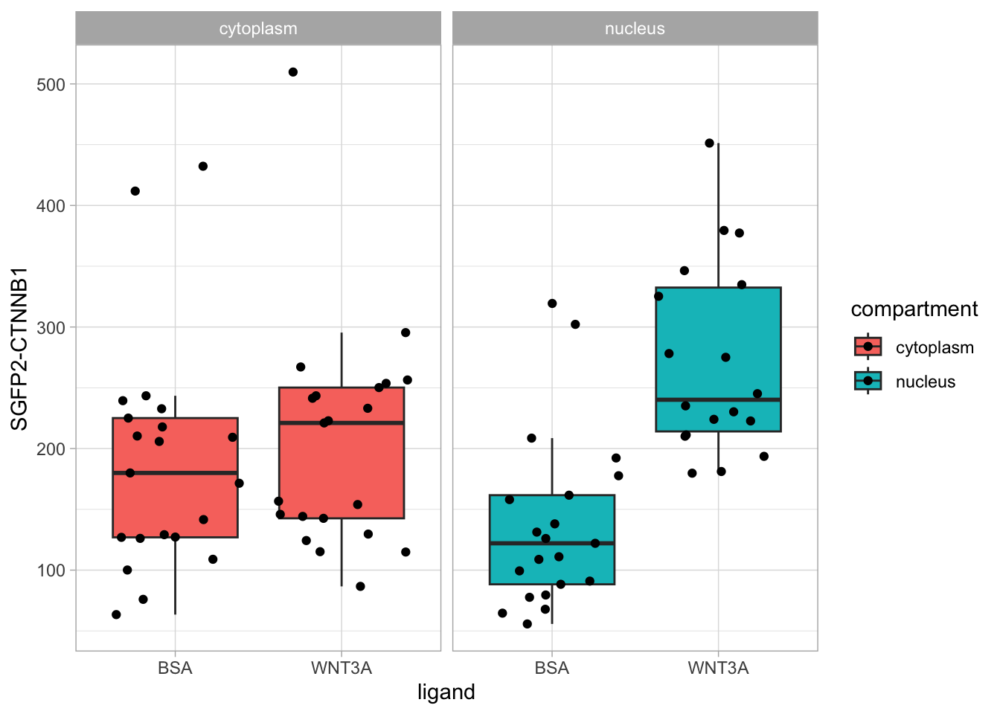
The theme is pretty nice, but the black strips are very distracting. Let’s change the fill and color (border) of the strips and change the text to black. At the same time, we remove the grid and the legend:
p <- p + theme(strip.background = element_rect(fill=NA, color="black", size = .5),
strip.text = element_text(color = 'black'),
panel.grid = element_blank(),
legend.position = "none",
plot.caption = element_text(color='grey80')
)
p
Finally, we fix the labels:
p <- p + labs(x="",
y="Concentration [nM]",
title = "Total SGFP2-CTNNB1",
caption = "@joachimgoedhart | based on data from de Man et al., DOI: 10.7554/eLife.66440",
tag = "Protocol 12"
)
p
To save the plot as a PNG file:
png(file=paste0("Protocol_12.png"), width = 4000, height = 3000, units = "px", res = 400)
p
dev.off()quartz_off_screen
2 4.13 Protocol 13 - Plotting multiple plots side-by-side
This protocol is a little different, in that it plots the same data in three different ways. I use this figure to illustrate that barplots are a poor choice for plotting multiple measurements per condition as the actual data is concealed. The alternatives that show all, i.e. jittered dotplots and beeswarmplots (or sinaplots) are shown next to the barplot.
In addition to the {tidyverse} package, we need two additional packages. The {ggbeeswarm} package to plot the beeswarm plot and {patchwork} to stitch the plots together:
Attaching package: 'patchwork'The following object is masked from 'package:MASS':
areaNext, the wide data is loaded and converted into a tidy format:
df_wide <- read.csv("data/Area_in_um-GEFs.csv")
df_tidy <- pivot_longer(df_wide, cols = everything(), names_to = "Condition", values_to = "Area")
head(df_tidy)# A tibble: 6 × 2
Condition Area
<chr> <dbl>
1 LARG 1064.
2 wt 1571.
3 TIAM 3058.
4 LARG 1374.
5 wt 1946.
6 TIAM 1767.Next, we define the order of factors in the column with Conditions:
To plot the barplot, we calculate the summary statistics and store them in a separate dataframe:
df_summary <- df_tidy %>% na.omit() %>%
group_by(Condition) %>%
summarise(n=n(),
mean=mean(Area),
sd=sd(Area)
) %>%
mutate(sem=sd/sqrt(n-1))Now, we do things a bit differently than we’ve done in other protocols. First, we define a plotting canvas and its theme settings. We use this object p as the basis for the three plots that differ in the data visualization and not in the layout.
p <- ggplot(df_tidy, (aes(x=Condition))) +
theme_bw(base_size = 12) +
theme(panel.grid = element_blank()) +
scale_y_continuous(expand = c(0, 0), limits = c(0, 4200)) +
labs(y=NULL)
p The first plot is a barplot (the length of the bar reflects the mean value) with the standard error of the mean as errorbar:
The first plot is a barplot (the length of the bar reflects the mean value) with the standard error of the mean as errorbar:
p1 <- p + geom_errorbar(data=df_summary,
aes(x=Condition,ymin=mean-sem, ymax=(mean+sem)),
width=0.3, size=1, alpha=0.7) +
geom_bar(data=df_summary, aes(y=mean), stat = 'identity', width = 0.5) +
labs(y=expression("Area [µm"^2*"]"), title="Clean | Data hidden")The second plot shows the data as jittered dots:
p2 <- p + geom_jitter(data = df_tidy,
aes(x=Condition, y=Area),
position=position_jitter(0.3), cex=2, alpha=0.4) +
labs(title="Messy | Data shown")The third plot is a beeswarm-type plot that organizes the dots according to the data distribution:
p3 <- p + geom_quasirandom(data = df_tidy,
aes(x=Condition, y=Area),
varwidth = TRUE, cex=2, alpha=0.4)+
labs(title="Clean | Data shown")The patchwork package has a simple syntax for combining the plots, for examples check the package website. A vertical composition is made by using p1/p2/p3. But this won’t look good, so combine the plots horizontally using p1+p2+p3:

The result is a set of plots that are nicely aligned, side-by-side. We have titles for individual plots and it would be nice to have a title and caption for the entire panel. We can use the plot_annotation() function from the {patchwork} package. The ‘theme’ specified in this function is only applied to the main title and caption:
p <- p + plot_annotation(title="Protocol 13",
caption="@joachimgoedhart",
theme = theme(plot.caption = element_text(size = 12, color="grey80"),
plot.title = element_text(size = 18))
)
p
To save the composite plot:
png(file=paste0("protocol_13.png"), width = 4000, height = 3000, units = "px", res = 400)
p
dev.off()quartz_off_screen
2 4.14 Protocol 14 - Volcano plot
The results of comparative omics experiments are (very) large datasets. The datasets contain information on the fold change and level of significance for every gene or protein in a genome. The volcano plot is a scatterplot that visualizes both the (\(log_2\)) fold change and level of significance (usually \(-log_{10}[p-value]\)). This data visualization enables the display of a large amount of data in a concise way. Typically, only a handful of datapoints in the volcano plot are of interest, also known as hits. The hits are datapoints that surpass a threshold that is defined by the user for both the significance and fold change. Annotation of hits (with names) is used to draw attention to these most relevant or interesting datapoints.
This protocol showcases the construction of a volcano plot, including the filtering of significant datapoints and the annotation of top candidates. The code that is used here is similar to what is used in the web app VolcaNoseR which is dedicated to making volcano plots. In fact, the data visualization shown here is very close to the standard output of VolcaNoseR and uses the same example data.
We start by loading the {tidyverse} package for plotting:
The measured data is read from a CSV file. These data are originally from Becares et al, DOI: 10.1016/j.celrep.2018.12.094:
Rows: 3001 Columns: 9
── Column specification ─────────────────────────────────────────────────────────────────────────────────────────────────────────────────
Delimiter: ","
chr (1): Gene
dbl (8): baseMean, log2_FoldChange, FC, lfcSE, stat, pvalue, padj, minus_log...
ℹ Use `spec()` to retrieve the full column specification for this data.
ℹ Specify the column types or set `show_col_types = FALSE` to quiet this message.# A tibble: 6 × 9
Gene baseMean log2_FoldChange FC lfcSE stat pvalue padj
<chr> <dbl> <dbl> <dbl> <dbl> <dbl> <dbl> <dbl>
1 A1bg 39.2 1.25 2.38 0.299 4.19 0.0000278 0.00170
2 A1cf 1183. 0.745 1.68 0.192 3.88 0.000102 0.00456
3 Aadac 3196. 0.688 1.61 0.157 4.39 0.0000111 0.000817
4 Aadat 1481. 0.603 1.52 0.181 3.33 0.000878 0.0232
5 Aaed1 432. 0.422 1.34 0.193 2.19 0.0288 0.235
6 Aamdc 165. 0.332 1.26 0.191 1.74 0.0827 0.419
# ℹ 1 more variable: minus_log10_pvalue <dbl>The basic volcano plot is a scatterplot that displays minus_log10_pvalue versus log2_FoldChange:

To improve the visualization, we will 1) set thresholds, 2) display the thresholds, 3) filter interesting candidates based on the thresholds and 4) annotate the top-10 candidates.
4.14.1 Step 1 - Define thresholds
To identify data that is of interest, thresholds are defined for both the effect size and the significance. We define the thresholds, <-1.5 and >1.5 for the effect size and >5 for the significance. When both thresholds are exceeded the data is considered as significant (worthy of a closer look).
4.14.2 Step 2 - Display thresholds
To plot the thresholds, we use geom_hline() and geom_vline(). Note that we can specify two intercepts at once, which is used below for geom_vline():
ggplot(data = df_tidy, aes(x=log2_FoldChange, y=minus_log10_pvalue)) + geom_point() +
geom_vline(xintercept = c(-1.5,1.5), linetype="dashed") +
geom_hline(yintercept = 5, linetype="dashed")
4.14.3 Step 3 - Filtering with thresholds
In this step, we add another column to the data, which defines, for each row, whether a gene is significantly lower, higher or unchanged. This is based on the thresholds:
df_tidy <- df_tidy %>% mutate(
Change = case_when(
`log2_FoldChange` > 1.5 & `minus_log10_pvalue` > 5 ~ "Increased",
`log2_FoldChange` < -1.5 & `minus_log10_pvalue` > 5 ~ "Decreased",
TRUE ~ "Unchanged"
)
)
head(df_tidy)# A tibble: 6 × 10
Gene baseMean log2_FoldChange FC lfcSE stat pvalue padj
<chr> <dbl> <dbl> <dbl> <dbl> <dbl> <dbl> <dbl>
1 A1bg 39.2 1.25 2.38 0.299 4.19 0.0000278 0.00170
2 A1cf 1183. 0.745 1.68 0.192 3.88 0.000102 0.00456
3 Aadac 3196. 0.688 1.61 0.157 4.39 0.0000111 0.000817
4 Aadat 1481. 0.603 1.52 0.181 3.33 0.000878 0.0232
5 Aaed1 432. 0.422 1.34 0.193 2.19 0.0288 0.235
6 Aamdc 165. 0.332 1.26 0.191 1.74 0.0827 0.419
# ℹ 2 more variables: minus_log10_pvalue <dbl>, Change <chr>We can now use the column ‘Change’ to color code the data:
p <- ggplot(data = df_tidy, aes(x=log2_FoldChange, y=minus_log10_pvalue)) +
geom_vline(xintercept = c(-1.5,1.5), linetype="dashed") +
geom_hline(yintercept = 5, linetype="dashed")
p <- p + geom_point(aes(color = Change))
p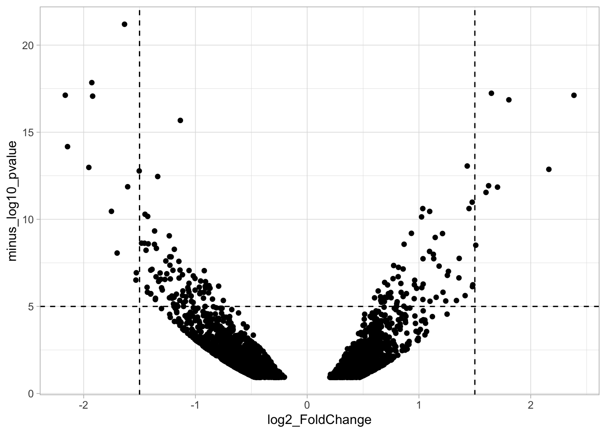
4.14.4 Step 4 - Annotations
The ‘top hits’ are the datapoints that are the furthest from the origin. Here, we only consider genes that are either ‘Decreased’ or ‘Increased’, so we remove the ‘Unchanged’. To determine the distance from the origin for each datapoint, we sum the x- and y- position. Note that this simple summation is known as the ‘Manhattan distance’. After calculation, the top 10 is selected and stored in another dataframe, df_top. :
df_top <- df_tidy %>%
filter(Change != 'Unchanged') %>%
mutate(distance = minus_log10_pvalue + abs(log2_FoldChange)) %>%
top_n(10,distance)The new dataframe can be used for labeling the top-10 hits:
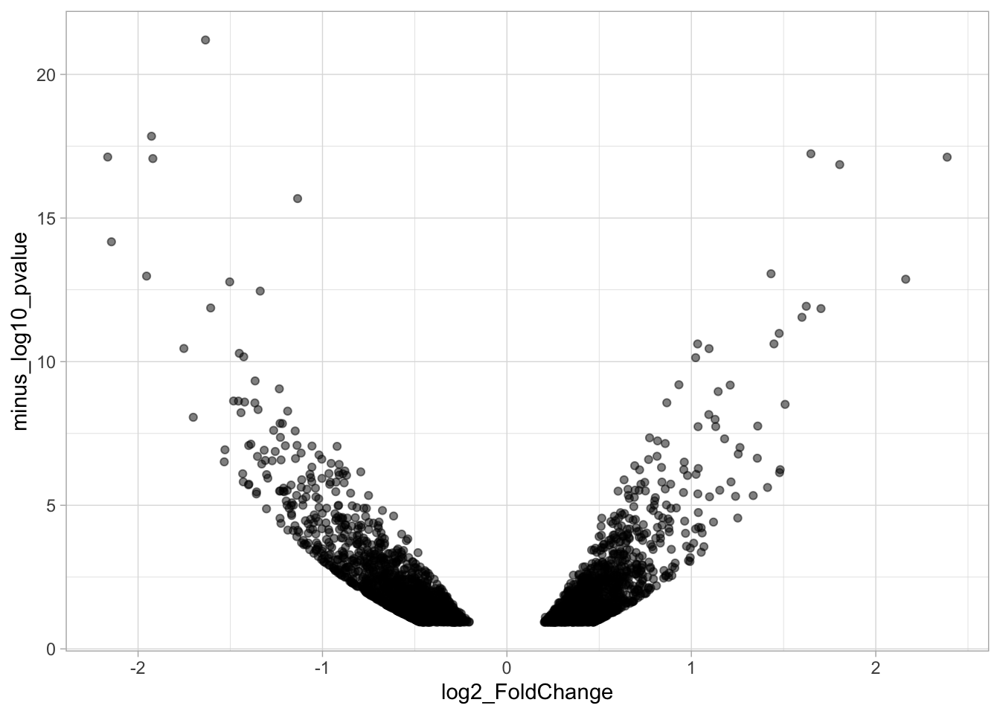
Wwe see that the labels overlap and this is often the case when a lot of data is displayed. There is a very handy packgae {ggrepel} that will reduce the overlap between labels:
library(ggrepel)
p <- p + geom_text_repel(
data = df_top,
aes(label = Gene),
size=5, # increase font size
min.segment.length = 0, # draw all line segments
box.padding = 0.5# give some space for drawing the lines
)
p
Now that we have implemeted the features of a volcano plot, we can focus on improving the data visualization. We can emphasize the hits by adding a black outline to these points. The default shape for ‘geom_point()’ is a filled circle. Below we use shape 21, which accepts both a color for the outline and filling. The black outline is defined by ‘color’:
p + geom_point(data = df_top, aes(x=log2_FoldChange, y=minus_log10_pvalue), shape=21, color='black')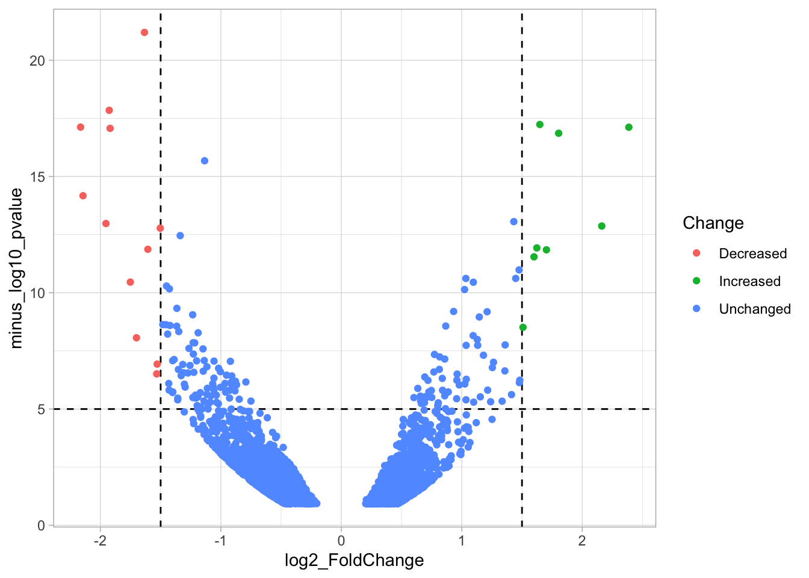
The line that connects the dot with the label is a bit too long and is visible within the dot, which is a bit ugly. To solve this we can fill these dots which will hide the line. We can also make the dots a bit bigger to emphasize the hits:
p <- p + geom_point(data = df_top, aes(x=log2_FoldChange, y=minus_log10_pvalue, fill=Change), shape=21, color='black', size=2)
p
Let’s change the colors to make the uninteresting datapoints less pronounced:
newColors <- c("dodgerblue", "orange", "grey")
p <- p + scale_color_manual(values = newColors) + scale_fill_manual(values = newColors)
p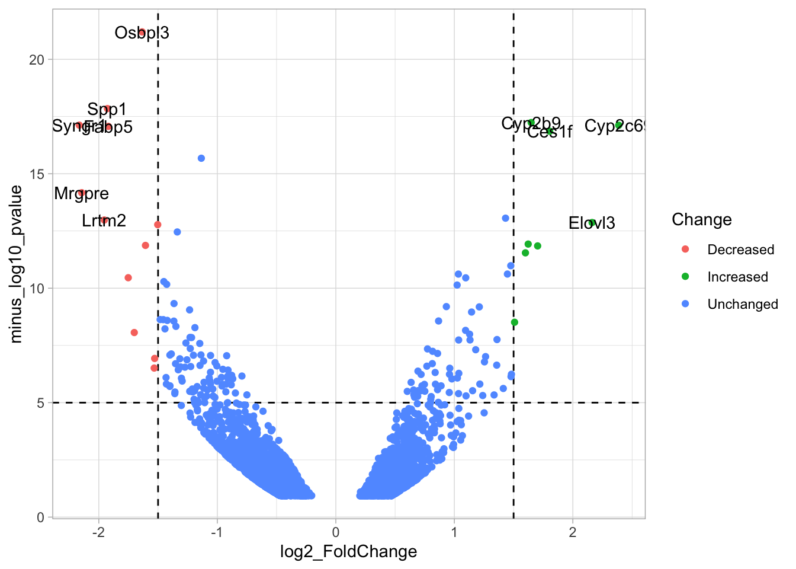
Finally, we can change the styling by adjusting the labels and the theme. The labels for x- and y-axis use the function expression() to add subscript text to the labels:
p <-
p + labs(
title = "Differentially expressed genes",
x = expression('Fold Change ('*Log[2]*')'),
y = expression('Significance ('*-Log[10]*')'),
caption = "@joachimgoedhart\n(based on data from Becares et al, DOI: 10.1016/j.celrep.2018.12.094)",
tag = "Protocol 14"
)Modify the layout by adjusting the theme:
p <- p +
theme_light(base_size = 16) +
theme(plot.caption = element_text(color = "grey80", hjust = 1)) +
theme(panel.grid = element_blank()) +
theme(legend.position="none")Change the x-axis scale the give the labels a bit more room and display the result:
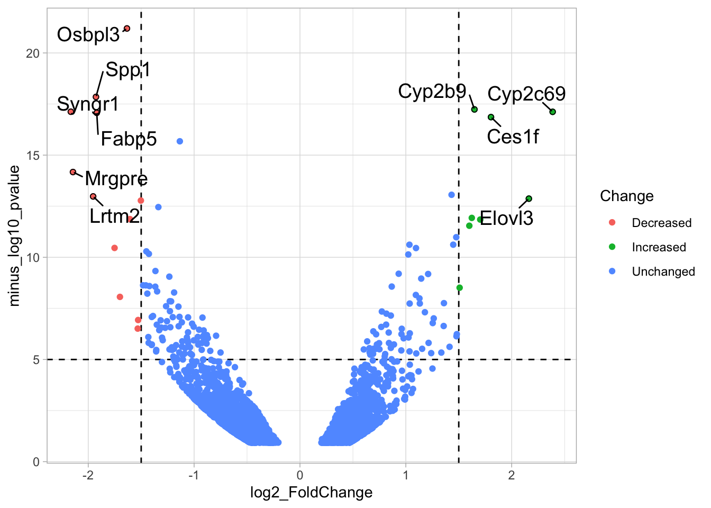
To save the plot as a png file:
png(file=paste0("Protocol_14.png"), width = 4000, height = 3000, units = "px", res = 400)
p
dev.off()quartz_off_screen
2 4.15 Protocol 15 - Timeline
In this protocol we will make a timeline. The timeline organizes events along a line that consists of dates, in this case years. The years are treated as continuous data and the events are text and hence qualitative data.
We start by loading the {tidyverse} package, mainly for the use of ggplot2:
The data for the timeline is stored in a text file that has tabs as delimiters:
Year DOI
1 1962 10.1002/jcp.1030590302
2 1971 10.1002/jcp.1040770305
3 1974 10.1021/bi00709a028
4 1979 10.1016/0014-5793(79)80818-2
5 1992 10.1016/0378-1119(92)90691-h
6 1994 10.1126/science.8303295
Event
1 Osamu Shimomura isolates a green protein from jellyfish
2 First appearance of the name Green Fluorescent Protein
3 Crystallization of GFP, QY is 0.72
4 Structure of the GFP chromophore is solved
5 Douglas Prasher clones the AvGFP gene
6 Martin Chalfie expresses AvGFP in bacteria and wormsLet’s first make a basic plot to visualize the data in the column ‘Year’:
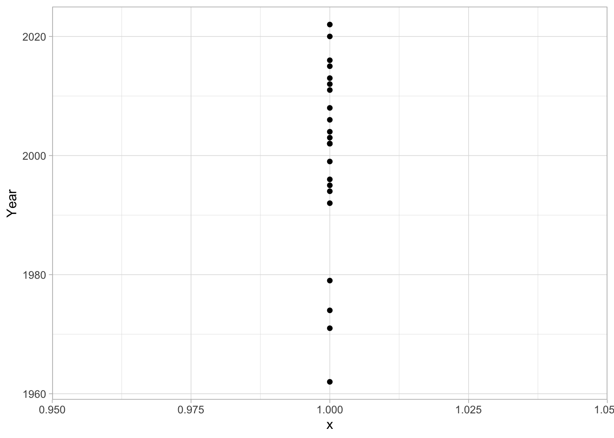
Each point reflects a year in which some event happened. The events can be plotted as text:

We need to do a couple of things. First, make a nice timeline that shows each year as a dot and the years with events as a more pronounced dot. Second, we need to align the text and reduce the overlap.
4.15.1 Improve the timeline
To make a nice timeline, I’d like to show every year as dot and therefore I define a new dataframe:
ggplot(df_timeline, aes(x=1,y=Year)) +
geom_point(shape=21, size=3, fill="white") +
geom_point(data =yrs, aes(x=1), size=0.5, color="grey20") 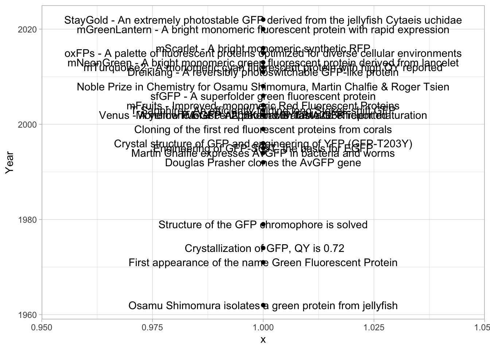
Let’s add a line to make it a timeline and do some formatting of the theme to get rid of the legend:
ggplot(df_timeline, aes(x=1, y=Year)) +
geom_vline(xintercept = 1, size=0.1) +
geom_point(shape=21, size=3, fill="white") +
geom_point(data=yrs, aes(x=1), size=0.5, color="grey20") +
theme_minimal() + theme(legend.position = "none")
We will remove the grid and text for the x-axis. We add the ticks for the y-axis and we specify the labels for the years using breaks in scale_y_continuous():
p <- ggplot(df_timeline, aes(x=1, y=Year)) +
geom_vline(xintercept = 1, size=0.1) +
geom_point(shape=21, size=3, fill="white") +
geom_point(data=yrs, aes(x=1), size=0.5, color="grey20") +
theme_minimal(base_size = 16) +
theme(legend.position = "none") +
theme(axis.ticks.y = element_line(color="grey", linetype = 1, size = 1),
panel.grid = element_blank(),
axis.title = element_blank(),
axis.text.x = element_blank(),
plot.caption = element_text(color = "grey80", hjust = 0)
) +
scale_y_continuous(limits = c(1962,2025), breaks = c(seq(1965, 2024, by=5)))
p
Allright, things start to look better now. The next step is to add text. We will use labels and the geom_label_repel() function from the {ggrepel} package to avoid overlap. First we load the package:
4.15.2 Add and format text
Now, we can add labels to the plotting object:

Let’s change the x-axis scale, to make room for the text on the right side of the line. Also, we can left-align the text vertically and add some space between the points and the text. This is achieved by optimizing the ‘nudge_x’, ‘hjust’ and ‘direction’:
p + geom_label_repel(aes(label=Event),
nudge_x = 0.05,
hjust = 0,
direction = "y"
) +
scale_x_continuous(expand = c(0.01, 0), limits = c(1.0,1.5)) 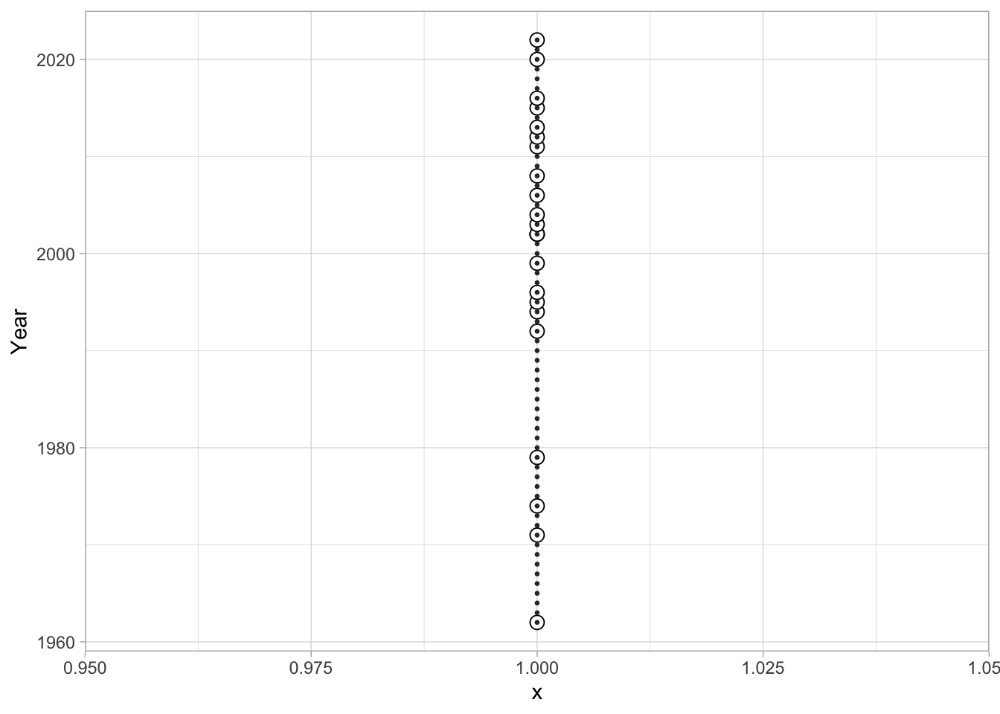
Finally, we can adjust the font size for the label. We also add colors to the different years. I like to use the ‘viridis’ color scale here. because it runs from dark to bright. However, if we would use the full range the final color is bright yellow which has a poor contrast on white. To solve this, we define the ‘end’ of the viridis scale at 80%:
p <- p + aes(color=Year) +
geom_label_repel(aes(label=Event),
nudge_x = 0.05,
hjust = 0,
direction = "y",
size = 3
) +
scale_x_continuous(expand = c(0.01, 0), limits = c(1.0,1.5)) +
scale_color_viridis_c(end = 0.8)+
labs(title = "60 years of GFP discovery and engineering",
tag = "Protocol 15",
caption = "@joachimgoedhart") +
NULL
p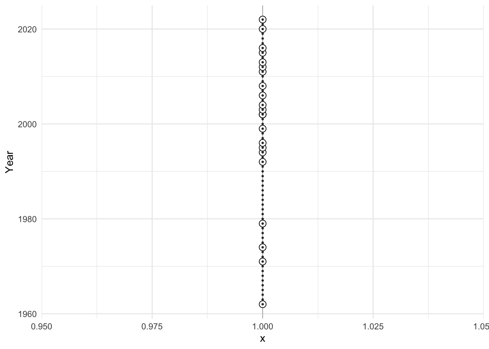
To save the plot as a png file:
png(file=paste0("Protocol_15.png"), width = 4000, height = 3000, units = "px", res = 400)
p
dev.off()quartz_off_screen
2 4.16 Protocol 16 - Scatterplots and correlation
In this protocol we will look at the data from a co-expression experiment. Images of cells co-expressing two fluorescent proteins were acquired with a fluorescence microscope. The relative intensity of each fluorescent protein was measured. The data can be plotted in a scatter plot to visualize the correlation between the two expressed proteins. To quantify the variation in co-expression, a correlation coefficient can be determined. More experimental details can be found in the original publication Goedhart et al. (2011).
We start by loading the {tidyverse} package:
Read the data:
BCY_YFP BCY_CFP BYC_YFP BYC_CFP TCY_YFP TCY_CFP TYC_YFP TYC_CFP IYC_YFP
1 88.841 113.92 88.841 113.92 107.36 124.57 148.75 165.71 290.32
2 95.053 118.53 95.053 118.53 129.05 158.97 166.32 192.10 362.47
3 99.563 208.09 99.563 208.09 132.55 160.52 170.43 215.41 395.74
4 105.630 275.01 105.630 275.01 140.84 166.70 191.14 225.23 420.21
5 124.370 162.51 124.370 162.51 144.45 166.72 198.11 255.85 476.79
6 142.130 225.24 142.130 225.24 152.47 146.71 213.19 230.92 495.70
IYC_CFP ICY_YFP ICY_CFP
1 122.01 60.505 196.97
2 151.95 124.820 625.77
3 159.96 145.510 672.24
4 194.17 143.980 703.17
5 161.08 143.450 717.70
6 225.22 150.590 775.40The data was stored in a spreadsheet, and is in a wide format. Pairs of columns belong to the same measurement. The two fluorescent proteins were CFP and YFP and this indicated in the column name after the underscore. Several co-expression systems were analyzed and this is indicated in the string before the underscore. We can plot one condition to see what the data looks like in a scatter plot:

4.16.1 Linear fit
A linear fit can be added with the geom_smooth function. The method is speficied as lm which means linear model:
`geom_smooth()` using formula = 'y ~ x'
The linear model has an intercept, but suppose that I want to fit the data without offset. To this end, a custom formula can added to overrule the default:
ggplot(df_co, aes(x=BCY_YFP, y=BCY_CFP)) + geom_point() + geom_smooth(method = 'lm', formula = y~0+x)
To get to the coefficients of the fit we can use the lm() function fits data to a linear model:
Call:
lm(formula = BCY_CFP ~ BCY_YFP + 0, data = df_co)
Coefficients:
BCY_YFP
1.14 To get a summary of the fit we use the summary() function and assign the results to ‘fit_summary’:
Call:
lm(formula = BCY_CFP ~ BCY_YFP + 0, data = df_co)
Residuals:
Min 1Q Median 3Q Max
-3622.9 -140.6 45.6 284.5 4270.0
Coefficients:
Estimate Std. Error t value Pr(>|t|)
BCY_YFP 1.13983 0.02218 51.39 <2e-16 ***
---
Signif. codes: 0 '***' 0.001 '**' 0.01 '*' 0.05 '.' 0.1 ' ' 1
Residual standard error: 572 on 733 degrees of freedom
(106 observations deleted due to missingness)
Multiple R-squared: 0.7828, Adjusted R-squared: 0.7825
F-statistic: 2641 on 1 and 733 DF, p-value: < 2.2e-16The object ‘fit_summary’ is a list and we can extract the R-squared value from this list:
[1] 0.78275564.16.2 Multiple scatterplots
So far so good; we have plotted the data from a single condition and the relevant parameters can be displayed. Now, let’s see if we can do the same for the entire dataset. First, we will need to restructure the data into a long format:
df_longer_co <- df_co %>% pivot_longer(cols = everything(), names_to = "Condition", values_to = "Intensity")
head(df_longer_co)# A tibble: 6 × 2
Condition Intensity
<chr> <dbl>
1 BCY_YFP 88.8
2 BCY_CFP 114.
3 BYC_YFP 88.8
4 BYC_CFP 114.
5 TCY_YFP 107.
6 TCY_CFP 125. This is a ‘true’ long format, but we will need to have the CFP and YFP data side-by-side to generate the scatterplot. Let’s first split the column with conditions in the Condition and the fluorescent protein (CFP or YFP):
df_longer_co <- df_longer_co %>% separate(Condition, into = c("Plasmid", "Protein"), sep = "_")
head(df_longer_co)# A tibble: 6 × 3
Plasmid Protein Intensity
<chr> <chr> <dbl>
1 BCY YFP 88.8
2 BCY CFP 114.
3 BYC YFP 88.8
4 BYC CFP 114.
5 TCY YFP 107.
6 TCY CFP 125. Now we can make the data ‘wider’ with the pivot_wider() function:
df_wider_co <- df_longer_co %>% pivot_wider(names_from = Protein, values_from = Intensity)
head(df_wider_co)# A tibble: 6 × 3
Plasmid YFP CFP
<chr> <list> <list>
1 BCY <dbl [840]> <dbl [840]>
2 BYC <dbl [840]> <dbl [840]>
3 TCY <dbl [840]> <dbl [840]>
4 TYC <dbl [840]> <dbl [840]>
5 IYC <dbl [840]> <dbl [840]>
6 ICY <dbl [840]> <dbl [840]>This will throw a warning message, since some rows have duplicated values. This is not an issue here, but the result is a ‘nested’ dataframe with the data in lists instead of a single value per cell. To fix this, we use unnest():
# A tibble: 6 × 3
Plasmid YFP CFP
<chr> <dbl> <dbl>
1 BCY 88.8 114.
2 BCY 95.1 119.
3 BCY 99.6 208.
4 BCY 106. 275.
5 BCY 124. 163.
6 BCY 142. 225.Now, we have the data in the right shape and we can make scatterplots for each ‘Plasmid’ with facet_wrap():
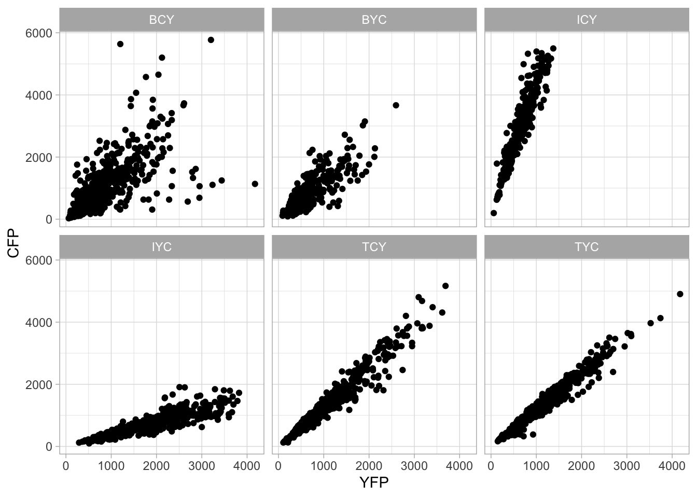
This looks great, but the names for the column ‘Plasmids’ are not informative so let’s fix that in the dataframe. The last two letter, either YC or CY indicate the order of the fluorescent proteins. The first letter indicates the system that was used for the co-expressing, with B = dual promotor, I = Ires and T = 2A. First, we split the column ‘Plasmid’:
# A tibble: 6 × 4
System Order YFP CFP
<chr> <chr> <dbl> <dbl>
1 "" B 88.8 114.
2 "" B 95.1 119.
3 "" B 99.6 208.
4 "" B 106. 275.
5 "" B 124. 163.
6 "" B 142. 225.This doesn’t look right, since the first column is empty, so let’s try again with:
df_co_all_split <- df_co_all %>% separate(Plasmid, into = c(NA, 'System', 'Order'), sep = "")
head(df_co_all_split)# A tibble: 6 × 4
System Order YFP CFP
<chr> <chr> <dbl> <dbl>
1 B C 88.8 114.
2 B C 95.1 119.
3 B C 99.6 208.
4 B C 106. 275.
5 B C 124. 163.
6 B C 142. 225.This looks good, and so we can replace the characters with names:
df <- df_co_all_split %>%
mutate(System = case_when(System == 'B' ~ " Dual-promotor",
System == 'I' ~ " IRES",
System == 'T' ~ '2A-peptide')) %>%
mutate(Order = case_when(Order == 'C' ~ "CFP first",
Order == 'Y' ~ "YFP first"))
head(df)# A tibble: 6 × 4
System Order YFP CFP
<chr> <chr> <dbl> <dbl>
1 " Dual-promotor" CFP first 88.8 114.
2 " Dual-promotor" CFP first 95.1 119.
3 " Dual-promotor" CFP first 99.6 208.
4 " Dual-promotor" CFP first 106. 275.
5 " Dual-promotor" CFP first 124. 163.
6 " Dual-promotor" CFP first 142. 225.
This looks a lot like the original figure in the paper (figure 1: https://doi.org/10.1371/journal.pone.0027321), but we still need to add the fits and optimize the layout. So let’s first assign the plot to an object and optimize the theme:
p <- ggplot(df, aes(x=YFP, y=CFP)) + geom_point(size = 0.5, alpha=0.5) + facet_grid(Order~System)
p <- p + geom_smooth(method = "lm", formula = y~x+0)
p <- p + theme_minimal(14)
p
Again, I’m not the biggest fan of grids, so I renmove the grids here. To indicate the area of the individual plots, I add a light blueish background with a thin grey border and the ‘strips’ with labels for the facets are a bit darker shade of blue:
p <- p + theme(axis.text = element_blank(),
panel.grid = element_blank(),
strip.background = element_rect(fill='#E0E0FF', color="grey90", size = .5),
panel.background = element_rect(fill='#F4F4FF', color="grey90"),
plot.caption = element_text(color='grey80', hjust=1),
NULL)
p I’m happy with the layout, so it’s time to adjust the labels. The units for the intensity are arbitrary, so we indicate this with a.u. for arbitrary units:
I’m happy with the layout, so it’s time to adjust the labels. The units for the intensity are arbitrary, so we indicate this with a.u. for arbitrary units:
p <- p + labs(x="yellow fluorescence [a.u.]",
y="cyan fluorescence [a.u.]",
title = "Correlations for co-expression systems",
caption = "\n@joachimgoedhart\nbased on data from Goedhart et al., DOI: 10.1371/journal.pone.0027321",
tag = "Protocol 16"
)
p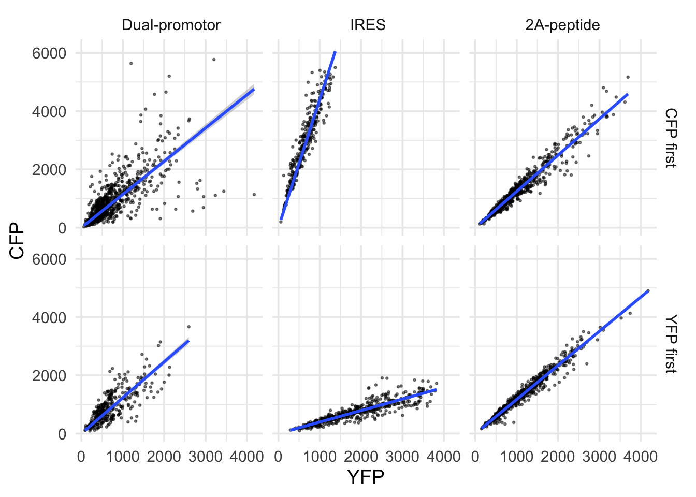
4.16.3 Fit parameters
This looks great, but we do not have the numbers for the correlations yet. So let’s calculate those and add them to a new dataframe ‘df_cor’:
df_cor <- df %>%
group_by(System, Order) %>% drop_na() %>%
summarize(n=n(), R_squared = cor(CFP, YFP, method = "pearson")^2)`summarise()` has grouped output by 'System'. You can override using the
`.groups` argument.# A tibble: 6 × 4
# Groups: System [3]
System Order n R_squared
<chr> <chr> <int> <dbl>
1 " Dual-promotor" CFP first 734 0.483
2 " Dual-promotor" YFP first 338 0.613
3 " IRES" CFP first 294 0.873
4 " IRES" YFP first 497 0.785
5 "2A-peptide" CFP first 629 0.944
6 "2A-peptide" YFP first 840 0.968We can use the dataframe with correlation values to add these to the plot. We use geom_text() with the ‘df_cor’ dataframe. The main challenges are (i) to position the text at the correct place and (ii) to add a nice label to indicate that the value is R squared.
Positioning of the label is defined by the x- and y-coordinate in combination with hjust and vjust. My approach to get the label at the correct place is usually trial and error. We can use ‘x=Inf’, to assign an infinite value to x, implying that it will be located at the extreme right of the plot. To position the label on the left side of the x-coordinate, we can use ‘hjust=1’. But to give it a bit more space, I prefer here ‘hjust=1.1’.
Similarly, we use 0 for y-coordinate and ‘vjust=0’ to define that the middle position of the label is at this coordinate (‘vjust=1’ moves the label down and ‘vjust=-1’ moves the label up.).
To add a styled R-squared to the value we use the paste() function to add text preceding the actual value. We will round down the value to two digits using round(). Finally we can set ‘parse = TRUE’ to make sure that the label is styled according to the plotmath() convention. Here that means that the caret produces superscript and that the double equal sign is reduced to a single equal sign:
# Code to add r-squared to the plot
p <- p + geom_text(data=df_cor,
x=Inf,
y=0,
hjust=1.1,
vjust=0,
aes(label=paste0('R^2 == ',round(R_squared,2))),
parse = TRUE,
color='darkslateblue'
)
p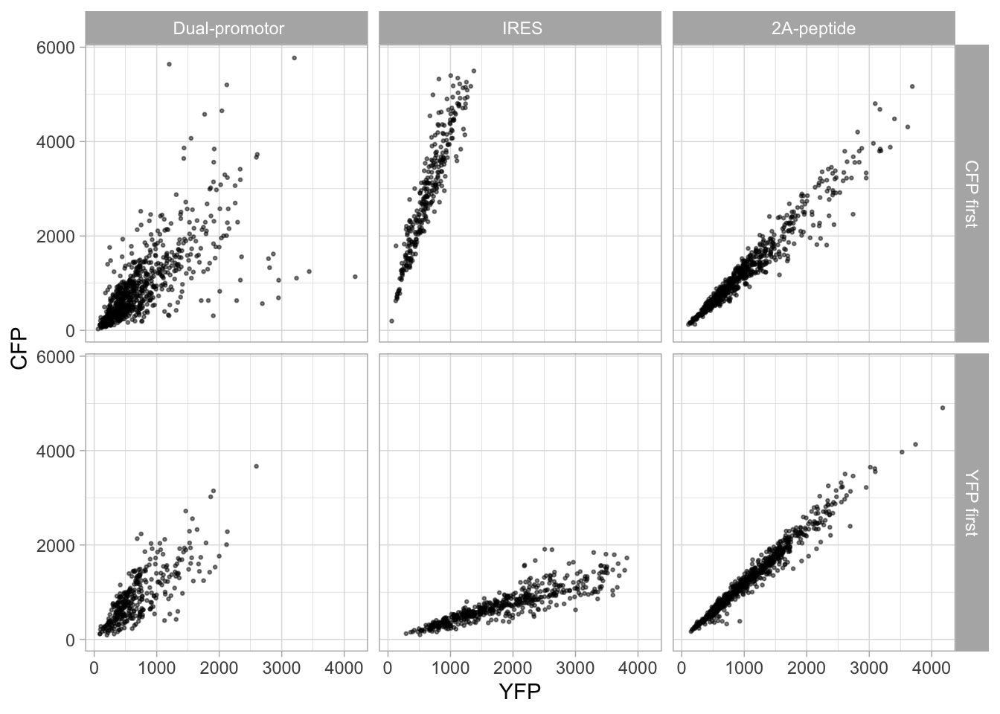
Finally, we can save the plot:
png(file=paste0("Protocol_16.png"), width = 4000, height = 3000, units = "px", res = 400)
p
dev.off()quartz_off_screen
2 4.17 Protocol 17 - Animated plots of data from optogenetics experiments
To study dynamic processes, data is measured at multiple points in time. This type of data is often presented in lineplots (see for instance protocols 3 & 7). To better visualize the dynamics, animated versions of lineplots can be made. These are nice for presentations or websites. This protocol explains how to generate an animated lineplot from timeseries data. The data is originally published by Mahlandt et al (2022).
Load the required packages:
First, we load the data from an excel file:
# A tibble: 6 × 6
unique_id id Time Sample Value type
<chr> <chr> <dbl> <chr> <dbl> <chr>
1 Sheldon_A1_R Sheldon 0.000355 A1_R 836. Control
2 Sheldon_A1_R Sheldon 0.00761 A1_R 836. Control
3 Sheldon_A1_R Sheldon 0.0104 A1_R 835. Control
4 Sheldon_A1_R Sheldon 0.0132 A1_R 834. Control
5 Sheldon_A1_R Sheldon 0.0159 A1_R 834. Control
6 Sheldon_A1_R Sheldon 0.0187 A1_R 833. ControlThe entire dataset is quite large and to simplify the presentation, we select a timerange between 17.75 and 18.8378 (this is the time in hours). In this timerange the dynamics can be nicely observed:
There are two factors in the column ‘type’, namely Control and OptoTiam. We calculate the summary of the measurements and labele the new column ‘Value’:
`summarise()` has grouped output by 'type'. You can override using the
`.groups` argument.Let’s make a first plot to visualize the data:

This looks good, so let’s define an object that contains the plot:
p <- ggplot(df_sub_summary, aes(x=Time, y=mean, color = type)) + geom_line(linewidth=2) + geom_point(aes(fill=type), color="black", size=4, shape=21)Note that we add a dot as well, by ‘geom_point()’. This will looks messy in the static plot, but it is a nice addition for the dynamic plot.
p <- p + theme_light(base_size=14) +
theme(panel.grid = element_blank()) +
theme(legend.position="none")
p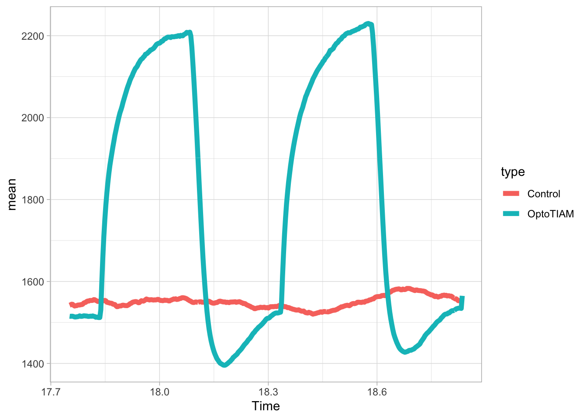
In this experiment, cells are exposed to blue light (optogenetics) and this triggers a change in the measured value. So below, we define two lightblue rectangles that indicate the illumination with blue light:
p <- p + annotate("rect", xmin = 17.8333, xmax = 18.0833 , ymin = -Inf, ymax = Inf, fill="blue", alpha=0.1) +
annotate("rect", xmin = 18.3333, xmax = 18.5833 , ymin = -Inf, ymax = Inf, fill="blue", alpha=0.1)
p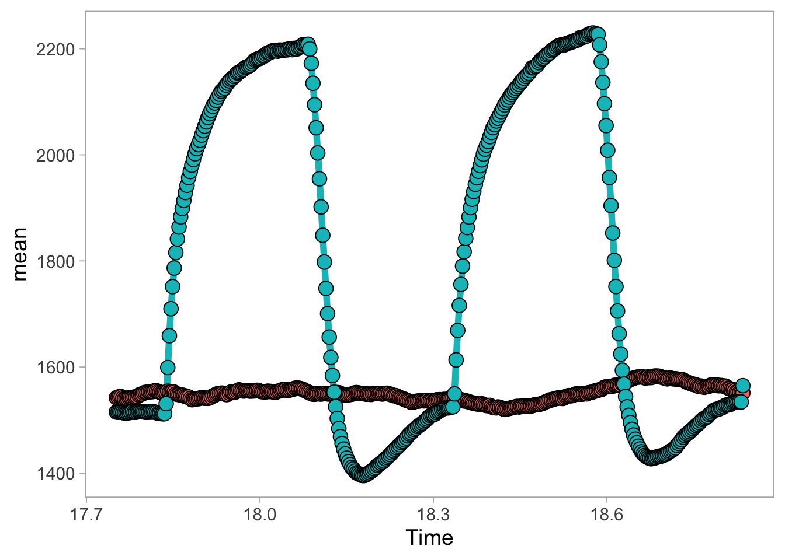
Now, we change the colors of the two lines and dots:
p <- p + scale_color_manual(values = c("#BEBEBE", "darkorchid")) +
scale_fill_manual(values = c("#BEBEBE", "darkorchid"))
p
Next, we can add labels and titles:
p <-
p + labs(
title = "Reversible increase of resistance in endothelial cells by optogenetics",
x = "Time [h]",
y = "Resistance [Ω]",
caption = "@joachimgoedhart\n(based on data from Mahlandt et al, DOI: https://doi.org/10.1101/2022.10.17.512253)",
tag = "Protocol 17"
) + theme(plot.caption = element_text(color='grey80', hjust=1))This is the version that I save as a preview of the animation:
png(file=paste0("Protocol_17.png"), width = 4000, height = 3000, units = "px", res = 400)
p
dev.off()quartz_off_screen
2 For the animated version, we can add a label for each of the two conditions. Note that (similar to the dots) it is plotted for each datapoint. But, in the animated version, only the leading (newly drawn) datapoint and label is shown.
Finally, we can turn this into an animated object with the function transition_reveal() from the {gganimate} package:
To generate an animated plot, we used animate() and define the number of frames:
The result can be displayed by typing animated_plot in the command line:

To save the animated object a to disk, use:
4.18 Protocol 18 - Combining animated plots with a movie
In protocol 17 an animated plot is generated from time series data. Here, we will see how an animated plot can be combined with a movie from imaging data. The data is originally published by Mahlandt et al (2022). We will plot the cell area over time and the movie that shows the area of individual cells.
Load the required packages:
Read the excel file with the data:
# A tibble: 6 × 45
Experiment Construct Cell_Experiment Cell Time Frame AreaShape_Area
<chr> <chr> <chr> <chr> <dbl> <dbl> <dbl>
1 210429_OptoG011_03… OptoTIAM Cell_01 Cell… 15 1 32774
2 210429_OptoG011_03… OptoTIAM Cell_01 Cell… 30 2 32514
3 210429_OptoG011_03… OptoTIAM Cell_01 Cell… 45 3 32371
4 210429_OptoG011_03… OptoTIAM Cell_01 Cell… 60 4 32082
5 210429_OptoG011_03… OptoTIAM Cell_01 Cell… 75 5 31799
6 210429_OptoG011_03… OptoTIAM Cell_01 Cell… 90 6 31296
# ℹ 38 more variables: AreaShape_BoundingBoxArea <dbl>,
# AreaShape_BoundingBoxMaximum_X <dbl>, AreaShape_BoundingBoxMaximum_Y <dbl>,
# AreaShape_BoundingBoxMinimum_X <dbl>, AreaShape_BoundingBoxMinimum_Y <dbl>,
# AreaShape_Center_X <dbl>, AreaShape_Center_Y <dbl>,
# AreaShape_Compactness <dbl>, AreaShape_Eccentricity <dbl>,
# AreaShape_EquivalentDiameter <dbl>, AreaShape_EulerNumber <dbl>,
# AreaShape_Extent <dbl>, AreaShape_FormFactor <dbl>, …The first timepoint is 15 and to set that to zero:
The dataframe ‘df’ has data for a number of cells, time and the area with the column names ‘Cell’, ‘Time’ and ‘AreaShape_Area’. To compare the area of the cells at the start of the experiment, we normalize the ‘AreaShape_Area’ to the initial value dividing all values of a single cell trace by the value of the first timepoint:
df <- df %>% group_by(Cell) %>% arrange(Time) %>% mutate(Area_norm=AreaShape_Area/AreaShape_Area[1]) %>% ungroup()Next, we calculate the average response and store this in a new dataframe:
`summarise()` has grouped output by 'Construct'. You can override using the
`.groups` argument.Let’s make a plot of the average:

This is an optogenetic experiment, where the light is turned on between timepoints 135 and 720, and we can define a new column ‘light’ that stores this information:
df_summary <- df_summary %>%
mutate(light = case_when(Time >= 135 & Time <= 720 ~ "ON",
TRUE ~ "OFF"
)
)This information on the light condition needs to be plotted ‘behind’ the data, and so we define it as the first layer:
p <- ggplot(df_summary, aes(x=Time, y=mean)) +
geom_tile(data=df_summary,
aes(x=Time, y=1,
height = Inf,
width = 15,
fill = light,
group = seq_along(Time)),
alpha=1)
p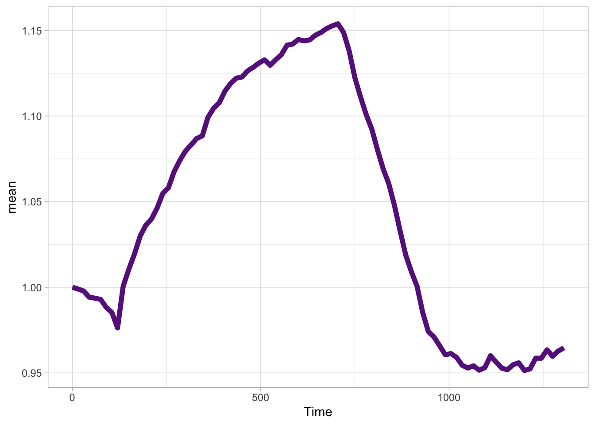
Note that we use here group = seq_along(Time)). This will be explained below, when the animated object is generated.
The blocks in the plot are indicating the different light conditions. The colors can be changed, so that a grey color is displayed when the light is off, and a cyan rectangle shows when the light was switched on:

Now, let’s add the data for both the mean and the individual cells:
p <- p + geom_line(size=2, color='darkorchid4') +
geom_line(data=df, aes(x=Time, y=Area_norm, group=Cell), alpha=0.3, color='darkorchid4')
p
Some styling:
p <- p + theme_light(base_size=18) +
theme(panel.grid = element_blank(),
legend.position = "top",
legend.justification = "left",
legend.box.margin = margin(0,0,0,-40),
plot.caption = element_text(color='grey80', hjust=1))
p
To add a dot that is like the tip of a pen, drawing the line, we can use geom_point(). Here it is only added for the average curve:
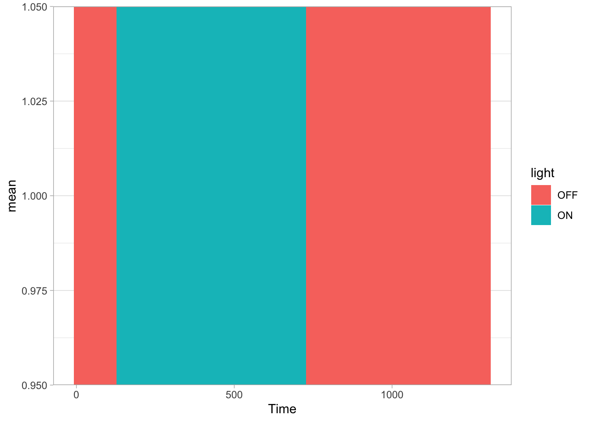
In the plot, the dot is shown for each timepoint, but in the animation it will only be drawn for the active frame. This is unlike the line, which remains visible. More detail about this behavior can be found below.
Finally, let’s change the labels for the axes and set the scale. We use expand = FALSE to use the exact limits that we have specified:
p <- p + labs(x='Time [s]',
y='Area [µm]',
caption='\n@joachimgoedhart\nbased on data from Mahlandt et al., DOI: 10.1101/2022.10.17.512253') +
coord_cartesian(xlim = c(0,1305), ylim = c(0.8,1.45), expand = FALSE)For the animation, we need to know the number of timepoints, as we will use this number to generate the same amount of ‘frames’ in the animation:
[1] 88So the number of frames should be 88. We use to plot object p as the input for the animation and generate the animation with the function transition_reveal(), which will reveal the data over time. The result is stored in the object a:
Now, we can render the animation with a defined number of frames and size. Since we will display the movie and plot side-by-side, the height of both panels should be identical. The movie has a height of 900 pixels, so we use this to set the dimension of the animated plot:
animated_plot <- animate(plot = a,
nframes = 88,
width = 900,
height = 900,
units = "px", res = 100,
renderer = magick_renderer())`geom_line()`: Each group consists of only one observation.
ℹ Do you need to adjust the group aesthetic?
`geom_line()`: Each group consists of only one observation.
ℹ Do you need to adjust the group aesthetic?
`geom_line()`: Each group consists of only one observation.
ℹ Do you need to adjust the group aesthetic?
`geom_line()`: Each group consists of only one observation.
ℹ Do you need to adjust the group aesthetic?The result is animated_plot which is a “magick-image”:
[1] "magick-image"This will allow us to combine it with a GIF using the {magick} package. So it is important to define the ‘renderer’ in the animate()function.
4.18.1 Intermezzo
A few words on the animated objects. Using the function transition_reveal(), the lines are revealed over time. Objects like the dot and the mean are only displayed at the location that is defined by a specific time and do not stay. A similar behaviour would be the default for the geom_tile(). However, here we want the area to be drawn, which means that the area that was drawn before should remain visible. To achieve that, we added group = seq_along(Time) to geom_tile(). The same could be done for the geom_point() when the points should remain visible for the entire trace.
4.18.2 Time for some magick
Now it’s time to load the movie. We will use the {magick} package to load the GIF and to combine them:
Linking to ImageMagick 6.9.12.93
Enabled features: cairo, fontconfig, freetype, heic, lcms, pango, raw, rsvg, webp
Disabled features: fftw, ghostscript, x11To test whether we can combine the movie and plot, we start by combining the first frame and verify that the resulting image looks right:

To combine all other frames and add them to the object ‘combined_gif’ we use a for loop:
for (i in 2:88) {
combined_panel <- image_append(c(movie[i], animated_plot[i]))
combined_gif <- c(combined_gif, combined_panel)
}To show the combined GIF:

To save a preview, we can selected one frame of the movie and save it:
montage <- image_montage(c(combined_gif[22],combined_gif[44],combined_gif[66],combined_gif[88]), geometry = "x400+0+100", tile = '2x2')
image_write_gif(montage, 'Protocol_18.png')To write the combined GIF to a file:
4.19 Protocol 19 - Plotting ratiometric FRET data
In this protocol, we plot the intensity data that are quantified by ImageJ/FIJI. The image analysis is originally reported in a preprint by Mahlandt and Goedhart (2021) in section 3.2.2. The original R-script is available on Github. Here, all steps are explained in protocol style.
We can load the output from FIJI data from the Github repository:
df_CFP <- read.csv("https://raw.githubusercontent.com/JoachimGoedhart/TimeLapse-Imaging-DataViz/main/3_2_2_RatioImaging/Results-CFP.csv")
df_YFP <- read.csv("https://raw.githubusercontent.com/JoachimGoedhart/TimeLapse-Imaging-DataViz/main/3_2_2_RatioImaging/Results-YFP.csv")To avoid the repetition of actions on both dataframes, we merge them:
X Label Mean Slice
1 1 CFP:Cell-01:180228_YCaM3.60_His_Py-02_w1YCam-CFP_t1 12.31 1
2 2 CFP:Cell-02:180228_YCaM3.60_His_Py-02_w1YCam-CFP_t1 14.04 1
3 3 CFP:Cell-03:180228_YCaM3.60_His_Py-02_w1YCam-CFP_t1 16.08 1
4 4 CFP:Cell-04:180228_YCaM3.60_His_Py-02_w1YCam-CFP_t1 18.39 1
5 5 CFP:Cell-01:180228_YCaM3.60_His_Py-02_w1YCam-CFP_t2 12.23 2
6 6 CFP:Cell-02:180228_YCaM3.60_His_Py-02_w1YCam-CFP_t2 13.90 2And let’s look at the last rows of this dataframe
X Label Mean Slice
963 479 YFP:Cell-03:180228_YCaM3.60_His_Py-02_w2YCam-YFP_t120 161.79 120
964 480 YFP:Cell-04:180228_YCaM3.60_His_Py-02_w2YCam-YFP_t120 191.84 120
965 481 YFP:Cell-01:180228_YCaM3.60_His_Py-02_w2YCam-YFP_t121 127.41 121
966 482 YFP:Cell-02:180228_YCaM3.60_His_Py-02_w2YCam-YFP_t121 148.50 121
967 483 YFP:Cell-03:180228_YCaM3.60_His_Py-02_w2YCam-YFP_t121 161.95 121
968 484 YFP:Cell-04:180228_YCaM3.60_His_Py-02_w2YCam-YFP_t121 191.58 121This looks right and the format of the dataframe is in a long format. However, the first column contains multiple conditions, or IDs, separated by a colon, so we split those with separate():
df_split_ratio <- df_ratio %>% separate(Label,c("filename", "Sample","Number"),sep=':')
str(df_split_ratio)'data.frame': 968 obs. of 6 variables:
$ X : int 1 2 3 4 5 6 7 8 9 10 ...
$ filename: chr "CFP" "CFP" "CFP" "CFP" ...
$ Sample : chr "Cell-01" "Cell-02" "Cell-03" "Cell-04" ...
$ Number : chr "180228_YCaM3.60_His_Py-02_w1YCam-CFP_t1" "180228_YCaM3.60_His_Py-02_w1YCam-CFP_t1" "180228_YCaM3.60_His_Py-02_w1YCam-CFP_t1" "180228_YCaM3.60_His_Py-02_w1YCam-CFP_t1" ...
$ Mean : num 12.3 14 16.1 18.4 12.2 ...
$ Slice : int 1 1 1 1 2 2 2 2 3 3 ...We can have a first glance at the data:

To get rid of cell-to-cell variation in expression levels, we normalize the data by dividing all data by the average value of the first 5 timepoints (a.k.a. the baseline):
df_split_ratio <- df_split_ratio %>%
group_by(Sample, filename) %>%
mutate(Mean_norm = Mean/mean(Mean[1:5]))
ggplot(df_split_ratio, aes(x=Slice, y=Mean_norm, by=Sample)) +
geom_line() + facet_wrap(~filename)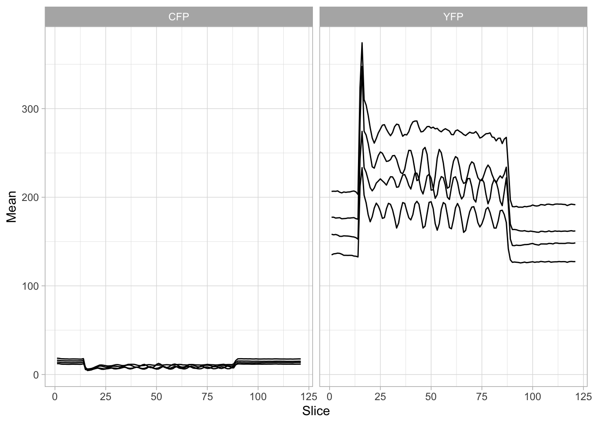
This looks good. To display the FRET ratio the data from the YFP channel are divided by that of the CFP channel. To achieve that, I will first make the data wider with pivot_wider() by defining two columns (this is close to what’s done in protocol 16). One with the YFP intensities and one with the CFP intensities:
df_wider_ratio <- df_split_ratio %>% pivot_wider(names_from = filename, values_from = Mean_norm)
head(df_wider_ratio)# A tibble: 6 × 7
# Groups: Sample [4]
X Sample Number Mean Slice CFP YFP
<int> <chr> <chr> <dbl> <int> <dbl> <dbl>
1 1 Cell-01 180228_YCaM3.60_His_Py-02_w1YCam-CFP_t1 12.3 1 1.03 NA
2 2 Cell-02 180228_YCaM3.60_His_Py-02_w1YCam-CFP_t1 14.0 1 1.03 NA
3 3 Cell-03 180228_YCaM3.60_His_Py-02_w1YCam-CFP_t1 16.1 1 1.02 NA
4 4 Cell-04 180228_YCaM3.60_His_Py-02_w1YCam-CFP_t1 18.4 1 1.03 NA
5 5 Cell-01 180228_YCaM3.60_His_Py-02_w1YCam-CFP_t2 12.2 2 1.03 NA
6 6 Cell-02 180228_YCaM3.60_His_Py-02_w1YCam-CFP_t2 13.9 2 1.02 NAThis is not what I wanted, as the YFP column shows NA . The reason is that the columns “Number” and “Mean” are not identical for the CFP and YFP data. So I will do this again, but first get rid of these columns:
df_wider_ratio <- df_split_ratio %>% dplyr::select(-c(Number, Mean)) %>%
pivot_wider(names_from = filename, values_from = Mean_norm)
head(df_wider_ratio)# A tibble: 6 × 5
# Groups: Sample [4]
X Sample Slice CFP YFP
<int> <chr> <int> <dbl> <dbl>
1 1 Cell-01 1 1.03 0.991
2 2 Cell-02 1 1.03 1.01
3 3 Cell-03 1 1.02 1.00
4 4 Cell-04 1 1.03 1.00
5 5 Cell-01 2 1.03 0.999
6 6 Cell-02 2 1.02 1.00 The data is ow in the right format and the calculation the ratio is straightforward:
# A tibble: 6 × 6
# Groups: Sample [4]
X Sample Slice CFP YFP Ratio
<int> <chr> <int> <dbl> <dbl> <dbl>
1 1 Cell-01 1 1.03 0.991 0.959
2 2 Cell-02 1 1.03 1.01 0.980
3 3 Cell-03 1 1.02 1.00 0.980
4 4 Cell-04 1 1.03 1.00 0.976
5 5 Cell-01 2 1.03 0.999 0.973
6 6 Cell-02 2 1.02 1.00 0.987From the experimental settings, we know that each slice takes two seconds, so we can add a column with ‘Time’ data:
To plot the ratio data:
p <- ggplot(df_wider_ratio, aes(x=Time, y=Ratio, group=Sample, color=Sample)) +
geom_line(size=1) +
geom_point(size=2)
p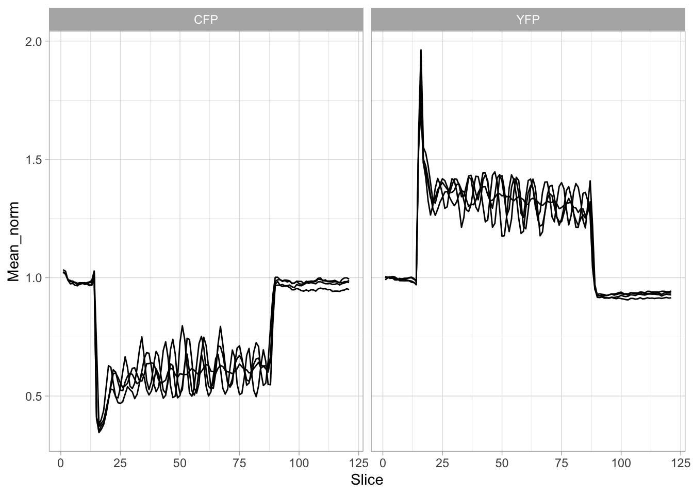
The data is in correct shape and we can start to work on the layout of the plot. The response that is observed is triggered by receptor activation at time point t=25 until t=175. We can display this time window by adding a rectangle with the function annotate(). We also change the theme:
p <- p +
annotate("rect",xmin=25,xmax=175,ymin=-Inf,ymax=Inf,alpha=0.1,fill="black") +
theme_light(base_size = 16)
p
Let’s remove the grid and change the labels of the axes:
p <- p +
labs(x = "Time [s]", y = "Normalized Ratio") +
labs(title = "Calcium oscillations induced by histamine",
tag = "Protocol 19") +
theme(panel.grid = element_blank())
p
The heterogeneity is best display by zooming in (to a timerange of 0-200s) and by displaying the plots individually:
p <- p + coord_cartesian(xlim = c(0,190), ylim = c(0.8,5.9), expand = FALSE) + facet_wrap(~Sample)
p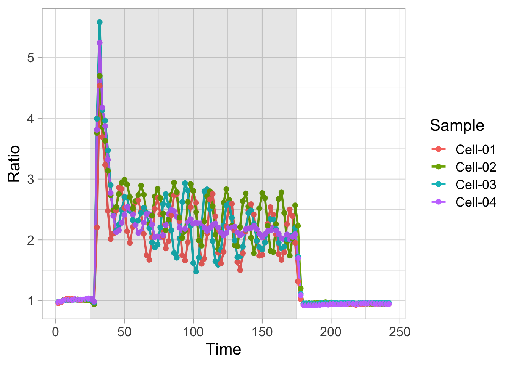
The ‘Sample’ is indicatd twice in this plot and we can get rid of at least one label. However, since I’m interested in displaying the heterogeneity and not in connecting the plots to a specific sample, I’ll get rid of both labels:
To remove the labels and strips for the facets:
To remove the legend and add a :
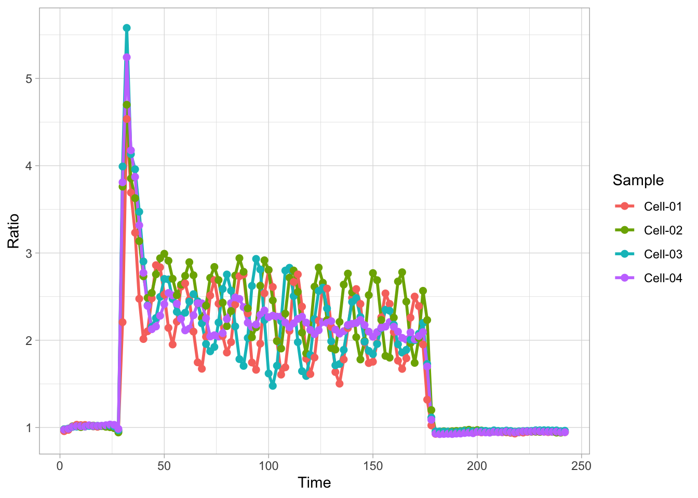
To save the plot:
png(file=paste0("Protocol_19.png"), width = 4000, height = 3000, units = "px", res = 400)
p
dev.off()quartz_off_screen
2 4.20 Protocol 20 - On- and off-kinetics
This document explains how to perform an exponential fit in R. It relies heavy on this blog by Douglas Watson: https://douglas-watson.github.io/post/2018-09_exponential_curve_fitting/ We use data that was originally published in figure 1 of Mahlandt et al (2022).
Load packages needed to wrangle the data and for plotting:
We can also define custom colors and set the theme for the plots:
#Nature themed color palette by Eike =D
#rapamycin would be springgreen4, magnets are cornflowerblue and iLID is darkorchid4
newColors <- c("cornflowerblue", "darkorchid4", "springgreen4")4.20.1 Reading and processing the data
Read the data. Since this dataset has “N.A.” that need to be converted to ‘NA’ for proper handling, we define this in ‘na.strings’ and after that the rows with ‘NA’ are removed:
df <- read.csv("data/OptoG003_Kinetics_Summary_timeZero.csv", na.strings = "N.A.") %>% na.omit()
head(df) Replicate Experiment Construct Cell
1 1 211215_OptoG003_01_4500_4516_iLID_P2_Cell_01 iLID Cell_01
2 1 211215_OptoG003_01_4500_4516_iLID_P2_Cell_01 iLID Cell_01
3 1 211215_OptoG003_01_4500_4516_iLID_P2_Cell_01 iLID Cell_01
4 1 211215_OptoG003_01_4500_4516_iLID_P2_Cell_01 iLID Cell_01
5 1 211215_OptoG003_01_4500_4516_iLID_P2_Cell_01 iLID Cell_01
6 1 211215_OptoG003_01_4500_4516_iLID_P2_Cell_01 iLID Cell_01
Time_adjusted Frame Membrane Cytosol Ratio
1 -12.95 1 200.23 356.14 0.5622227
2 -10.36 2 202.58 362.64 0.5586256
3 -7.77 3 212.70 357.81 0.5944496
4 -5.18 4 218.74 353.31 0.6191164
5 -2.59 5 205.28 347.05 0.5914998
6 0.00 6 215.72 348.98 0.6181443Two of the columns are renamed. And the order of the factors in the new column ‘System’ is defined (this will define the order in which the plots are shown):
df <- df %>% rename(Time=Time_adjusted, System=Construct) %>%
mutate(`System` = forcats::fct_relevel(`System`, c("magnets", "iLID", "rapamycin")))Let’s have a look at the data:
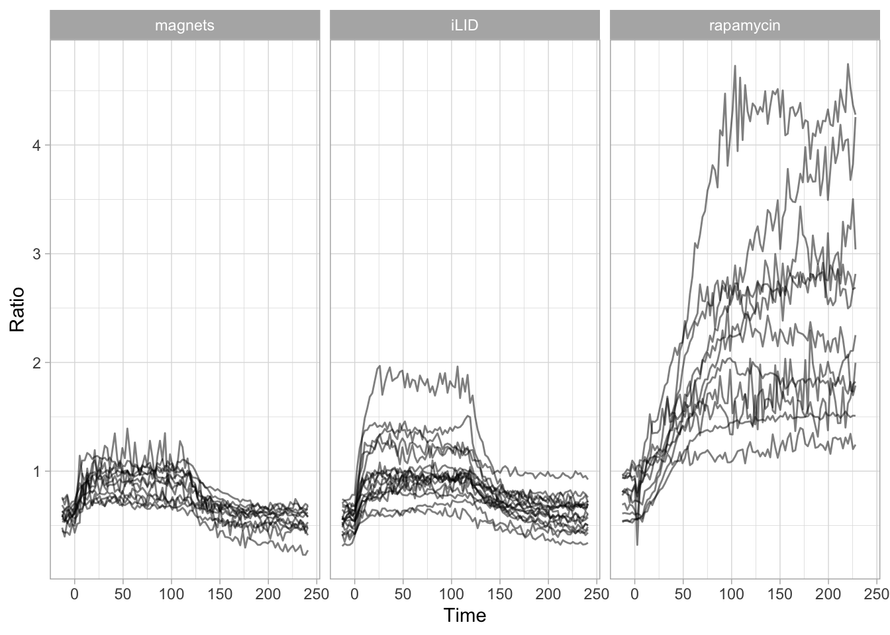
To summarise the data and get the mean for each condition:
`summarise()` has grouped output by 'Time'. You can override using the
`.groups` argument.# A tibble: 6 × 4
# Groups: Time [2]
Time System n mean
<dbl> <fct> <int> <dbl>
1 -13.0 magnets 12 0.604
2 -13.0 iLID 17 0.553
3 -13.0 rapamycin 11 0.781
4 -10.4 magnets 12 0.581
5 -10.4 iLID 17 0.550
6 -10.4 rapamycin 11 0.788Let’s plot the average values:

The data shows an increase and decrease of signal. The increase in the signal is due to blue-light stimulation and starts at t=0. Note that the systems ‘iLID’ and ‘magnets’ are reversible and have an on-rate and an off-rate. The rapamycin system is irreversible and only has an on-rate. To determine the rates, we will filter the relevant time-window.
4.20.2 Trial fitting on a single trace
First we define a dataframe that only has the iLID data from t=0 until t=100:
To fit the data we use the function nls(). First, let’s look at an example for a linear fit with the unknown variables ‘a’ and ‘b’:
The coefficients of the fit can be retrieved by:
a b
0.00201496 0.87887972 This will not be very accurate, but it illustrates how it works. Now let’s use a better model and fit an exponential:
#exponential fit: a0 is starting value, a is the amplitude, k is the rate constant
fit <- nls(mean ~ a0 + a*(1- exp(-k * Time)),
data = df_ilid,
start = list(a0 = 0, a = 2, k = .1)
)The variables are ‘a0’, ‘a’ and ‘k’, which reflect the value at t=0, the amplitude and the rate. The values are:
a0 a k
0.5505354 0.4681990 0.1349511 To plot the fit together with the data, we use the function augment() from the broom package:
library(broom)
ggplot(data = augment(fit), aes(x=Time, y=mean)) + geom_point(size=4, alpha=.5) +
geom_line(aes(y=.fitted), color="black", size=1)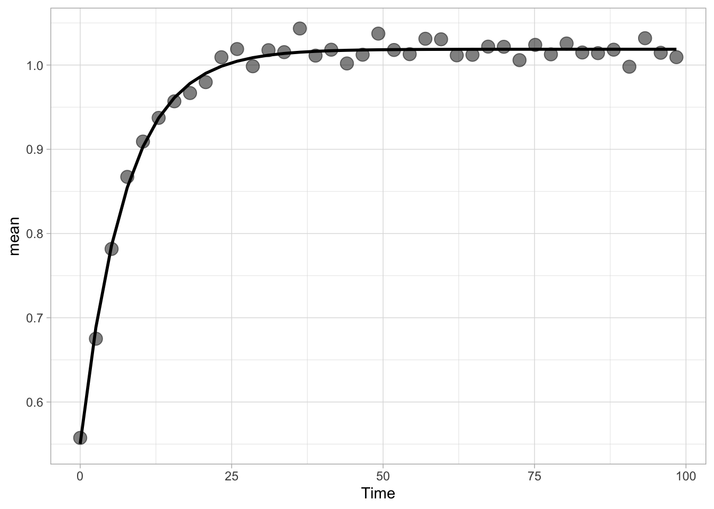
This looks like a good fit. Now let’s determine the half time, which is defines as ln2/k, where ln2 is the natural logarithm of 2. By default the log() function calculates the natural logarithm, so we use log(2). The value of ‘k’ is the third variable of the list that is returned by coef(fit):
[1] "The halftime is 5.13628563844601"4.20.3 On kinetics - alltogether
Let’s try to do the fitting on all three curves at once. First we need to filter the data to get the relevant part of the trace for determining the on-kinetics and we store this is a new dataframe df_fit_on:
df_fit_on <- df_summary %>% filter(Time>=0)
df_fit_on <- df_fit_on %>% filter(System=="iLID" & Time<100 | System=="magnets" & Time<100 | System=="rapamycin")
ggplot(df_fit_on, aes(x=Time, y=mean))+geom_point(size=2, alpha=0.8)+facet_wrap(~System)+xlim(0,200)
This looks good. To fit the data, we use an approach that uses nest() to generate a nested dataframe. The map() function is used to apply the fit to each System.
fitted <- df_fit_on %>%
nest(-System) %>%
mutate(
fit = map(data, ~nls(mean ~ a0 + a*(1- exp(-k * Time)),
data = .,
start = list(a0 = 0, a = 2, k = .1)
)),
tidied = map(fit, tidy),
augmented = map(fit, augment),
)
fitted# A tibble: 3 × 5
System data fit tidied augmented
<fct> <list> <list> <list> <list>
1 magnets <gropd_df [39 × 3]> <nls> <tibble [3 × 5]> <tibble [39 × 4]>
2 iLID <gropd_df [39 × 3]> <nls> <tibble [3 × 5]> <tibble [39 × 4]>
3 rapamycin <gropd_df [89 × 3]> <nls> <tibble [3 × 5]> <tibble [89 × 4]>The resulting dataframe fitted holds the estimated variables and these can be shown by using the function unnest() as follows:
fitted %>%
unnest(tidied) %>%
dplyr::select(System, term, estimate) %>%
spread(term, estimate) %>% rename(Amplitude=a) %>% mutate(`t1/2`=log(2)/k)# A tibble: 3 × 5
System Amplitude a0 k `t1/2`
<fct> <dbl> <dbl> <dbl> <dbl>
1 magnets 0.298 0.599 0.175 3.97
2 iLID 0.468 0.551 0.135 5.14
3 rapamycin 1.98 0.573 0.0161 43.1 Finally, we can extract the fit and plot it on top of the experimental data:
augmented <- fitted %>%
unnest(augmented)
ggplot(data = augmented, aes(x=Time, y=mean, colour = System)) +
geom_point(size=4, alpha=.5) +
geom_line(aes(y=.fitted), color="black", size=1) + facet_wrap(~System) + xlim(0,100) +
scale_color_manual(values = newColors)
4.20.4 Off kinetics
In a similar way, we can fit the off-kinetics. First we need to select the right time window:
df_fit_off <- df_summary %>% mutate(Time=Time-121)
df_fit_off <- df_fit_off %>% filter(System=="iLID" & Time>=0 | System=="magnets" & Time>=0)
ggplot(df_fit_off, aes(x=Time, y=mean))+geom_point(size=2, alpha=0.8)+facet_wrap(~System)+xlim(0,200)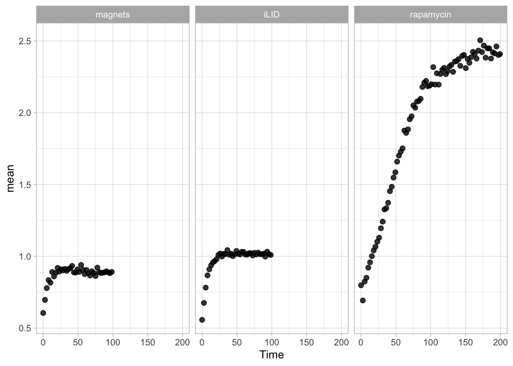
Next, we can do the fitting:
fitted_off <- df_fit_off %>%
nest(-System) %>%
mutate(
fit = map(data, ~nls(mean ~ a0 + a*(1- exp(-k * Time)),
data = .,
start = list(a0 = 2, a = -2, k = .1)
)),
tidied = map(fit, tidy),
augmented = map(fit, augment),
)To get the fit parameters:
fit_results <- fitted_off %>%
unnest(tidied) %>%
dplyr::select(System, term, estimate) %>%
spread(term, estimate) %>% rename(Amplitude=a) %>% mutate(`t1/2`=log(2)/k)
fit_results# A tibble: 2 × 5
System Amplitude a0 k `t1/2`
<fct> <dbl> <dbl> <dbl> <dbl>
1 magnets -0.264 0.810 0.0373 18.6
2 iLID -0.342 0.948 0.0342 20.3And finally, we can inspect the fit:
augmented <- fitted_off %>%
unnest(augmented)
p <- ggplot(data = augmented, aes(x=Time, y=mean, colour = System)) + geom_point(size=4, alpha=.5) +
geom_line(aes(y=.fitted), color="black", size=1) + facet_wrap(~System) +
scale_color_manual(values = newColors)
p
Finally, we can adjust the layout and titles:
p <- p + labs(
title = "Off-kinetics of two optogenetic systems",
x = "Time [s]",
y = "Response [arbitrary units]",
caption = "@joachimgoedhart\nbased on data from Mahlandt et al., DOI: 10.1101/2022.10.17.512253",
tag = "Protocol 20"
) +
theme(plot.caption = element_text(color = "grey80"),
legend.position = "none")
p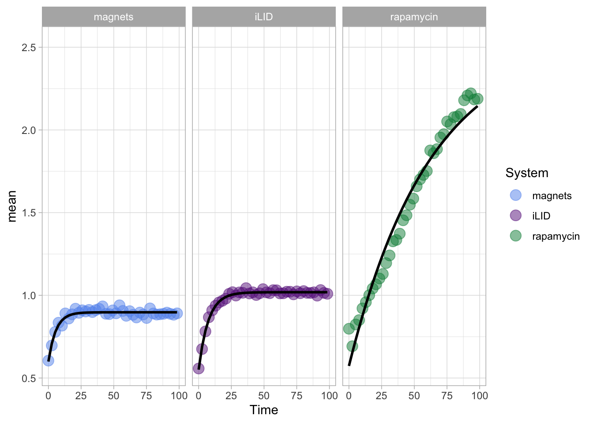
The data and fit look good, let’s add the t1/2 values as well. Protocol 16 explains how to add labels to plots that uses ‘facets’ and we use that approach here too:
# Code to add r-squared to the plot
p + geom_text(data=fit_results,
x=Inf,
y=0.9,
hjust=1.1,
vjust=0,
aes(label=paste0('t½ = ',round(`t1/2`,1), 's')),
size=5,
color='grey40'
)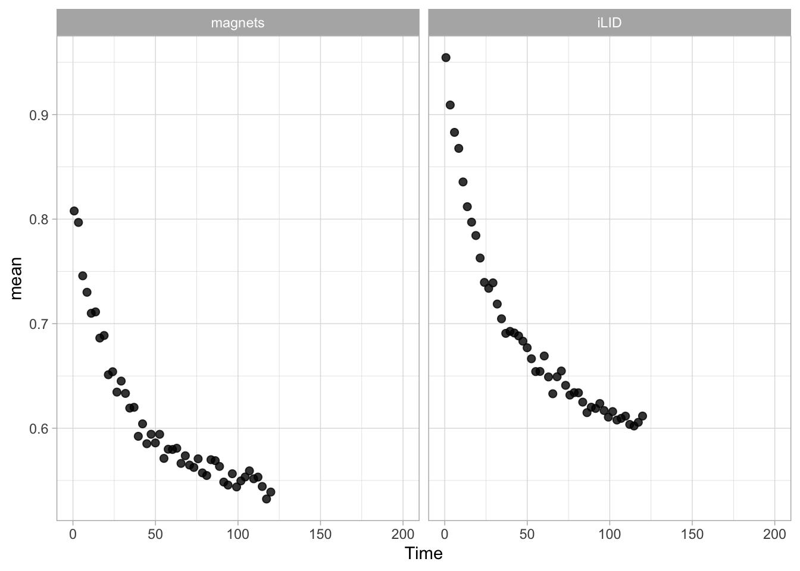
Let’s save the result:
png(file=paste0("Protocol_20.png"), width = 4000, height = 3000, units = "px", res = 400)
p
dev.off()quartz_off_screen
2 4.21 Protocol 21 - A spiral plot
In this protocol, we will plot time-series data in a spiral plot. This protocol is inspired by another application of a spiral plot to visualize data from several years.
We will use the data that is supplied by addgene on requests for plasmids that we have deposited.
We first load the {tidyverse} package:
The data comes in a csv format, let’s load that and check its first 6 rows:
df_addgene <- read.csv("data/Addgene-Requests-for-Materials_MolCyto_March_2024.csv", stringsAsFactors = TRUE)
head(df_addgene) ID Material Requesting.Country Date.Ordered
1 189773 pmScarlet3-Giantin_C1 UNITED STATES 03/18/2024
2 189768 pmScarlet3-alphaTubulin_C1 DENMARK 03/18/2024
3 189754 pDx_mScarlet3 UNITED STATES 03/15/2024
4 189767 pLifeAct-mScarlet3_N1 UNITED STATES 03/15/2024
5 176098 dimericTomato-2xrGBD FRANCE 03/15/2024
6 36201 pLifeAct-mTurquoise2 ISRAEL 03/14/2024The column with dates should not be a factor as it is now, but rather be in a date format. Alternatively, and that is what we will do here, we can split this column into day/month/year. The argument convert = TRUE ensures conversion of the values into a integer:
df_addgene <- df_addgene %>%
separate(Date.Ordered, into = c("Month","Day","Year"), sep = "/", convert = TRUE)
head(df_addgene) ID Material Requesting.Country Month Day Year
1 189773 pmScarlet3-Giantin_C1 UNITED STATES 3 18 2024
2 189768 pmScarlet3-alphaTubulin_C1 DENMARK 3 18 2024
3 189754 pDx_mScarlet3 UNITED STATES 3 15 2024
4 189767 pLifeAct-mScarlet3_N1 UNITED STATES 3 15 2024
5 176098 dimericTomato-2xrGBD FRANCE 3 15 2024
6 36201 pLifeAct-mTurquoise2 ISRAEL 3 14 2024Let’s calculate the accumulated number of requests. In this dataframe, each row is a single request:
Let’s plot how the number of requests evolved over months:

The plot shows the accumulation of requests over the years. The zig-zag appears because there are multiple values for each month. We can simplify this dataframe to show only the maximal value for each month (per year):
df_addgene_month <- df_addgene %>% group_by(Year, Month) %>%
summarise(total_max = max(total)) %>%
ungroup()`summarise()` has grouped output by 'Year'. You can override using the
`.groups` argument.Let’s plot these data again:
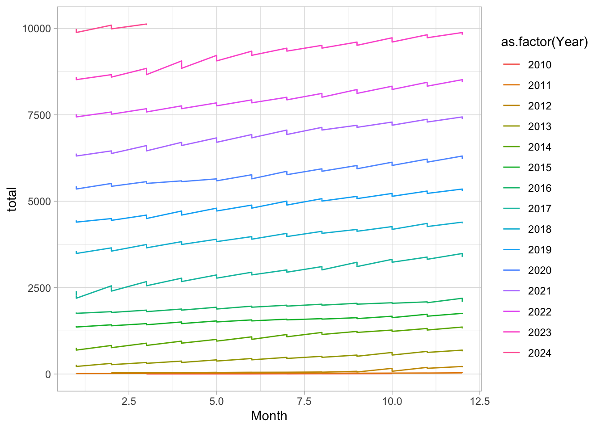
This looks better, and we can now plot this in a circular fahsion with coord_polar():
ggplot(df_addgene_month, aes(Month, total_max, color=as.factor(Year))) +
geom_line(linewidth=2) +
coord_polar(clip = 'off')
This looks good, but the lines show a step at the 0 degrees angle. This is because the data for the different years are connected to join all these data. There is a nice solution described here that we will use: https://stackoverflow.com/questions/41842249/join-gap-in-polar-line-ggplot-plot
bridge <- df_addgene_month[df_addgene_month$Month==12,]
bridge$Year <- bridge$Year +1
bridge$Month <- 0
df <- rbind(df_addgene_month, bridge)Now, plot again and change the colors:
p <- ggplot(df, aes(Month, total_max, color=as.factor(Year), fill=as.factor(Year))) +
geom_line(linewidth=2) +
coord_polar()
p
I do not like the girds and axis labels for these types of plots, so let’s get rid of those:
p <- p + theme_bw(base_size = 14) +
labs(x="", y="", color="Year") +
scale_y_continuous(limits = c(0,NA)) +
guides(color = guide_legend(reverse = TRUE)) +
theme(panel.grid.major = element_blank(),
panel.grid.minor = element_blank(),
axis.text.x = element_blank(),
axis.title.y = element_text(hjust=.8),
plot.caption = element_text(color='grey80', hjust=1, vjust=5))
p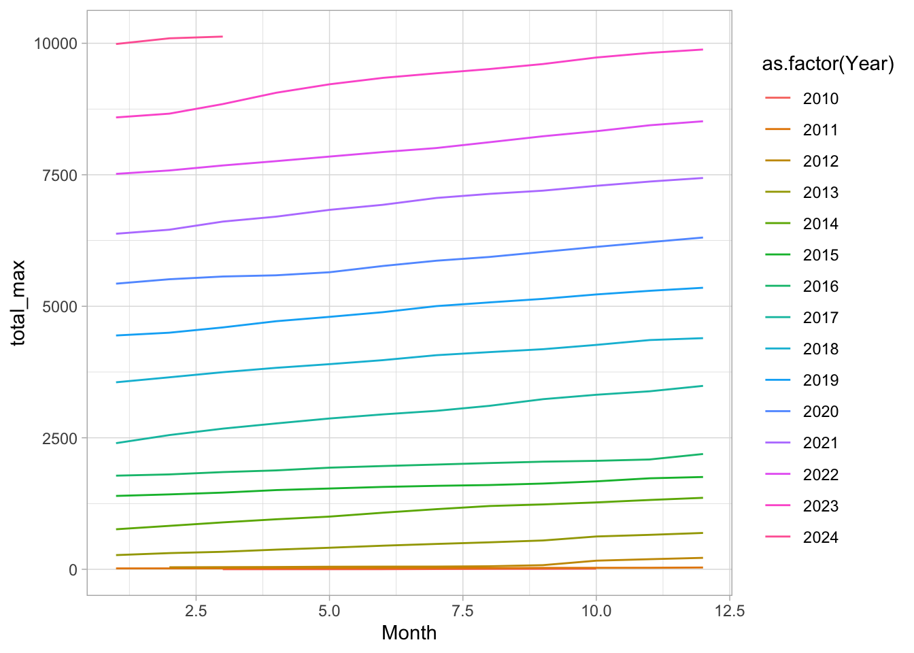
Adding titles:
p <- p + labs(title = "Evolution of the total number of plasmids",
subtitle = "shared through addgene.org",
tag = "Protocol 21",
caption="data provided by addgene.org - March 2024")
p
The legend is quite long as it lists all the years. We could list a subset by using scale_color_discrete():
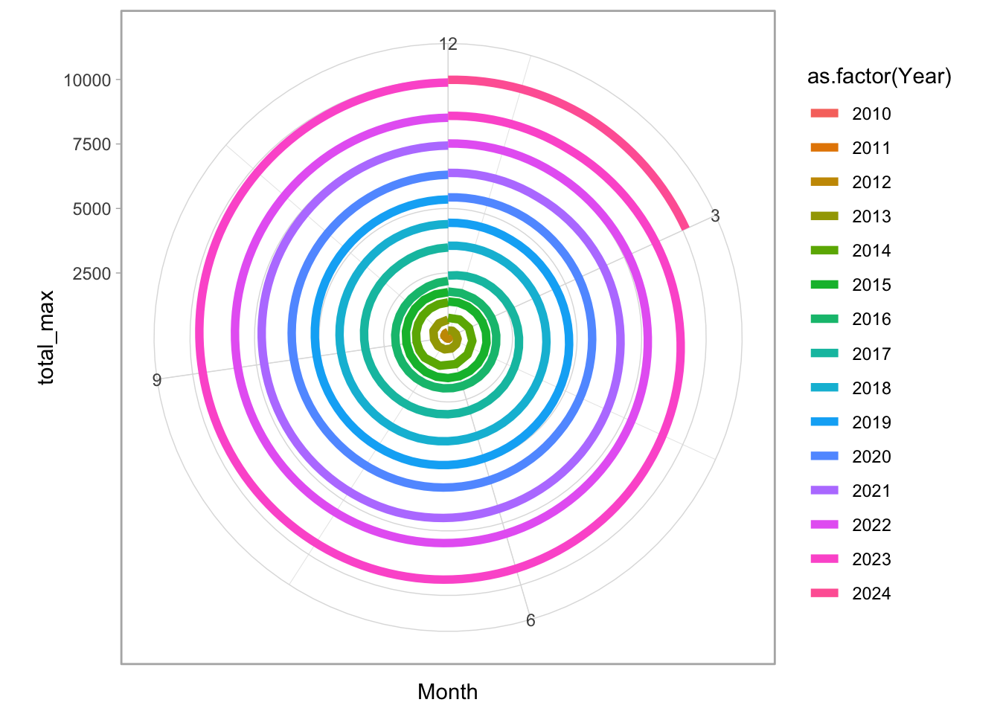
The legend is less cluttered, but it is less clear how many years are shown and which line belongs to which year (especially if you are colorblind, like I am). Another way the make the legend less prominent is by reducing the size:
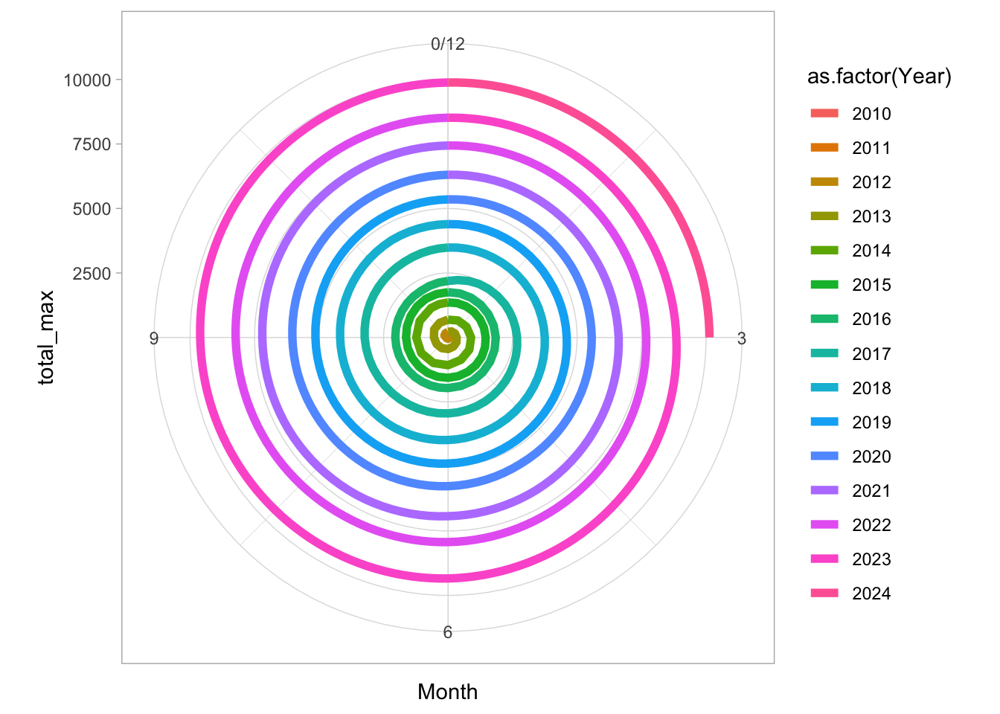
Yep, that is better. Let’s see if we can also do some direct labeling. We need a separate dataframe to get there:
Now we take a subset, because we only want to label every nth line (every 5th in this example), to reduce the number of labels. We use slice() and since we want to include the most recent year, we first sort the order of the years with arrange():
# A tibble: 3 × 3
Year Month total_max
<dbl> <dbl> <int>
1 2023 12 9881
2 2018 12 4394
3 2013 12 691The df_label is now exactly as I wanted it. Let’s add the labels from this dataframe:
p + geom_label(data=df_label, aes(x=Month, y=total_max, label=paste0(Year,": ",total_max)), color="black", size=4, label.size = NA, alpha=0.8)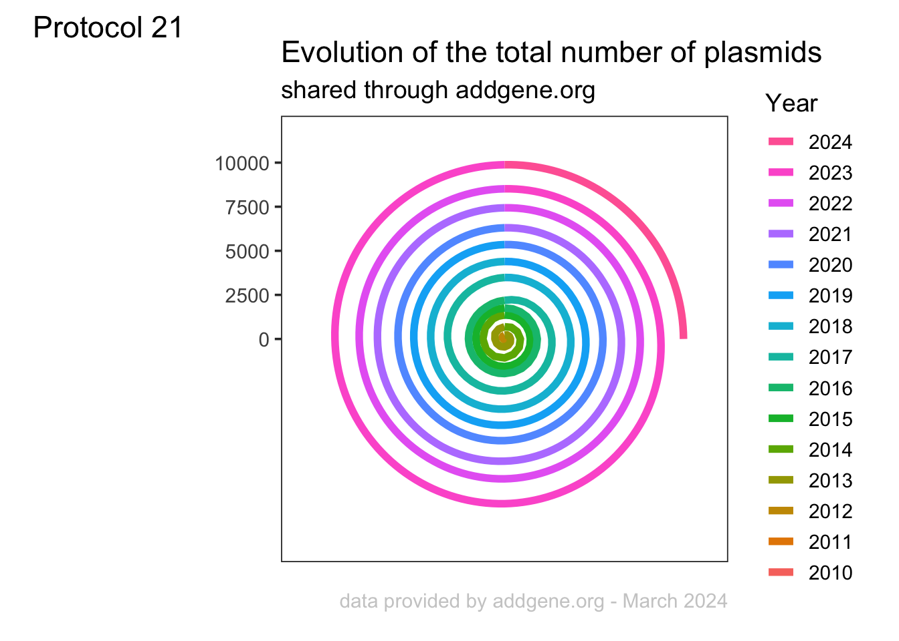
Nice. We do not need the legend anymore. And the labels are a bit large, so let’s make them smaller and move them a bit upwards. By adding a triangle (this is defined by shape=25 within geom_point()), that is also slightly moved upwards in the plot, the labels nicely point to the correct line:
p <- p + theme(legend.position = "none", axis.text = element_blank(), axis.ticks = element_blank()) +
geom_point(data=df_label,
aes(x=Month, y=total_max+600), color="black", shape=25, size=5) +
geom_label(data=df_label,
aes(x=Month, y=total_max+1200, label=paste0(Year,": ",total_max)),
color="black", size=4,
# label.size = NA,
alpha=1) +
scale_y_continuous(limits = c(0,NA), expand = c(0,0))Scale for y is already present.
Adding another scale for y, which will replace the existing scale.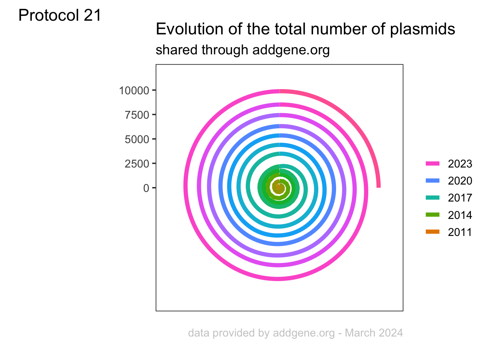
Let’s also add a label that shows the current, maximal value. First, we define the dataframe:
We use this dataframe to add a label to the endpoint:
p <- p +
geom_point(data=df_label_last,
aes(x=Month, y=total_max), size=3) +
geom_label(data=df_label_last,
aes(x=Month, y=total_max+2000, label=paste0(total_max)),
color="black", size=4,
# label.size = NA,
alpha=1)
p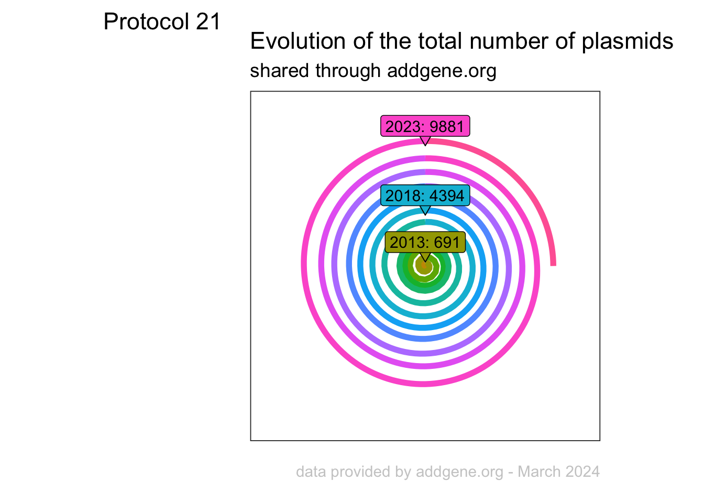
Finally, we can save the plot:
png(file=paste0("Protocol_21.png"), width = 4000, height = 3000, units = "px", res = 400)
p
dev.off()quartz_off_screen
2 4.22 Protocol 22 - Frequencies of discrete data
In this protocol we will look at the data supplied by addgene on requests for plasmids that we have deposited. We first load the {tidyverse} package:
Let’s load the data:
df_addgene <- read.csv("data/Addgene-Requests-for-Materials-Joachim-Goedhart-2005-2023-2023-Jan-31-05-05.csv", stringsAsFactors = TRUE)
head(df_addgene) ID Material Requesting.Country Date.Ordered
1 176106 mNeonGreen-Paxillin UNITED STATES 01/25/2023
2 191450 CMVdel-dimericTomato-WASp(CRIB) FRANCE 01/25/2023
3 36205 pmTurquoise2-Golgi ISRAEL 01/25/2023
4 176102 iSH-iRFP670-sspB GERMANY 01/20/2023
5 176113 SspB-HaloTag-DHPH-ITSN1 GERMANY 01/20/2023
6 176114 SspB-HaloTag-DHPH-TIAM1 GERMANY 01/20/2023There are several columns of data (note that the original data contains a column with names of the ‘Requesting PI’ which I have removed for privacy reasons). The Material, Requesting.Country and Date.ordered are of type factor. We can learn more about these factors with the function str()
'data.frame': 3740 obs. of 4 variables:
$ ID : int 176106 191450 36205 176102 176113 176114 176116 176125 176130 191453 ...
$ Material : Factor w/ 107 levels "3xmNeonGreen-3xrGBD",..: 36 4 73 26 98 99 100 29 62 43 ...
$ Requesting.Country: Factor w/ 54 levels "ARGENTINA","AUSTRALIA",..: 54 16 24 17 17 17 17 17 17 17 ...
$ Date.Ordered : Factor w/ 1655 levels "01/01/2013","01/02/2013",..: 114 114 114 90 90 90 90 90 90 90 ...There are 3740 rows, which reflect the number of requests. There are 107 different values for Material and 54 unique countries. Now, the ID is a unique identifier of the material as described in the column Material.
ID Material Requesting.Country Date.Ordered
1 176106 mNeonGreen-Paxillin UNITED STATES 01/25/2023
2 191450 CMVdel-dimericTomato-WASp(CRIB) FRANCE 01/25/2023
3 36205 pmTurquoise2-Golgi ISRAEL 01/25/2023
4 176102 iSH-iRFP670-sspB GERMANY 01/20/2023
5 176113 SspB-HaloTag-DHPH-ITSN1 GERMANY 01/20/2023
6 176114 SspB-HaloTag-DHPH-TIAM1 GERMANY 01/20/2023Let’s look at the number of requests for each plasmid:

Clearly, there are several popular plasmids and a large majority that has been requested only a few times. We generate a summary that shows has the count for each plasmid:
# A tibble: 6 × 2
Material n
<fct> <int>
1 pmTurquoise2-Mito 352
2 pmTurquoise2-Golgi 340
3 pPalmitoyl-mTurquoise2 340
4 pLifeAct-mTurquoise2 330
5 pmTurquoise2-ER 268
6 pmTurquoise2-Tubulin 207A column with the count data is generated. This can be used to sort the data:
# A tibble: 6 × 2
Material n
<fct> <int>
1 pmTurquoise2-Mito 352
2 pmTurquoise2-Golgi 340
3 pPalmitoyl-mTurquoise2 340
4 pLifeAct-mTurquoise2 330
5 pmTurquoise2-ER 268
6 pmTurquoise2-Tubulin 207The resulting dataframe shows the sorted count n for each Material. We can use these values in combination with geom_col() to plot these data.
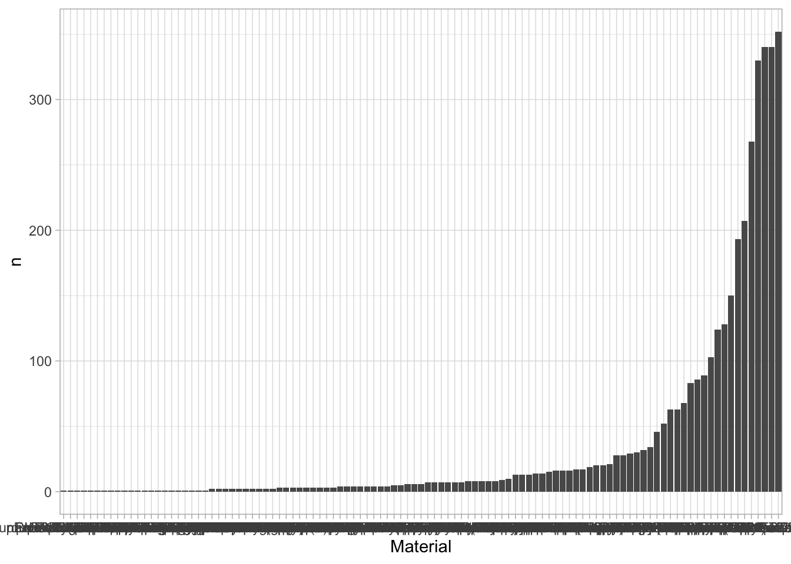
Ok, this looks better, but it’s probably more informative to look at a subset. Let’s say anything that has more than 10 requests. We also rotate the plot, which makes the plasmid names easier to read:
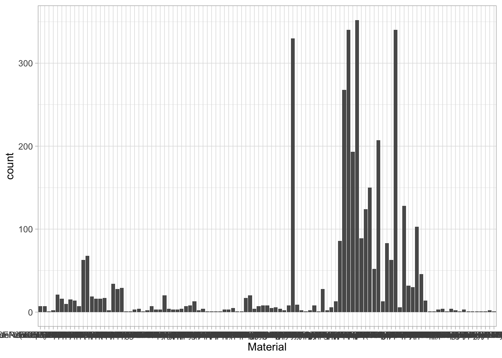
Addgene uses different colors of flames to indicate the popularity of the plasmids. For more than 20 request a red flame, more than 50 requests is a green flame and more than 100 requests is a blue flame. We can use these categories and colors also in the bar chart, but we first need to add this to the dataframe:
df_count <- df_count %>% mutate(flame = case_when(n<20 ~ "grey80",
(n>=20 & n<50) ~ "#D96C6D", #using a 'softer red'
(n>=50 & n <100) ~ "#E19E37",
n>=100 ~ "#50B0E8")
)Let’s replot these data:
The colors do not match with the data in the flame column. To use the actual colors from this column, we need the function scale_fill_identity():
p <- ggplot(df_count %>% filter(n>15), aes(x=Material, y=n, fill=flame)) +
geom_col() +
coord_flip() +
scale_fill_identity()
p
Let’s tweak the layout:
p <- p + theme_bw(base_size = 12) +
labs(x="",
y="Number of requests",
title="Requests for our plasmids at Addgene.org",
caption="@joachimgoedhart | Data from addgene") +
theme(legend.position = "none") +
scale_y_continuous(expand = c(0,0)) +
theme(plot.caption = element_text(color='grey80', hjust=1),
panel.border = element_blank(),
panel.grid.minor = element_blank(),
panel.grid.major.y = element_blank(),
axis.ticks.x = element_blank(),
axis.text.y = element_text(size=8))
p
Note that the font size for labels on the vertical axis is rather small, to avoid overlap between the labels. The text size can only be invreased when the number of labels is reduced (or when the plot area is increased).
To save the plot:
png(file=paste0("Protocol_22.png"), width = 4000, height = 3000, units = "px", res = 400)
p
dev.off()quartz_off_screen
2 Note that this plot is also used on the addgene dashboard that is available here:
https://amsterdamstudygroup.shinyapps.io/Addgene_dashboard/
You can upload your own addgene data, which will a plot similar to the one that is described here.